<!DOCTYPE html>
<html lang="ml">
<head>
  <meta charset="utf-8">
  <meta name="viewport" content="width=device-width, initial-scale=1.0">
  <title>അധ്യായം 8: തൊടുവരകൾ - SCERT Class 10 ഗണിതം</title>
  <style>

:root {
  --bg-color: #fcfcfd;
  --card-bg: #ffffff;
  --text-color: #1e293b;
  --text-muted: #64748b;
  --primary-color: #0284c7;
  --primary-light: #e0f2fe;
  --border-color: #e2e8f0;
  --radius: 10px;
  --shadow: 0 4px 6px -1px rgb(0 0 0 / 0.05), 0 2px 4px -2px rgb(0 0 0 / 0.05);
}

body {
  font-family: -apple-system, BlinkMacSystemFont, "Segoe UI", Roboto, "Noto Sans Malayalam", "Manjari", "Gayathri", sans-serif;
  background-color: var(--bg-color);
  color: var(--text-color);
  line-height: 1.8;
  font-size: 1.1rem;
  margin: 0;
  padding: 0;
}

.container {
  max-width: 860px;
  margin: 0 auto;
  padding: 2.5rem 1.5rem 5rem 1.5rem;
}

header {
  margin-bottom: 2.5rem;
  padding-bottom: 1.5rem;
  border-bottom: 2px solid var(--border-color);
}

.badge-row {
  display: flex;
  gap: 0.5rem;
  margin-bottom: 0.75rem;
}

.badge {
  display: inline-block;
  font-size: 0.75rem;
  font-weight: 700;
  text-transform: uppercase;
  letter-spacing: 0.05em;
  padding: 0.25rem 0.65rem;
  border-radius: 9999px;
  background: var(--primary-light);
  color: var(--primary-color);
}

.badge-medium {
  background: #fef3c7;
  color: #b45309;
}

h1 {
  font-size: 2.1rem;
  font-weight: 800;
  margin: 0.5rem 0 1rem 0;
  line-height: 1.3;
  color: #0f172a;
}

.nav-bar {
  display: flex;
  justify-content: space-between;
  margin: 1.5rem 0;
  font-size: 0.95rem;
}

.nav-bar a {
  color: var(--primary-color);
  text-decoration: none;
  font-weight: 600;
  padding: 0.5rem 1rem;
  border-radius: var(--radius);
  background: var(--card-bg);
  border: 1px solid var(--border-color);
  transition: all 0.2s ease;
}

.nav-bar a:hover {
  background: var(--primary-light);
  border-color: var(--primary-color);
}

.nav-bar .disabled {
  color: var(--text-muted);
  pointer-events: none;
  border-color: transparent;
  background: transparent;
}

.page-section {
  background: var(--card-bg);
  border: 1px solid var(--border-color);
  border-radius: var(--radius);
  box-shadow: var(--shadow);
  padding: 2rem;
  margin-bottom: 2.5rem;
}

.page-header {
  display: flex;
  align-items: center;
  justify-content: space-between;
  margin-bottom: 1.25rem;
  padding-bottom: 0.5rem;
  border-bottom: 1px dashed var(--border-color);
}

.page-number {
  font-size: 0.8rem;
  font-weight: 700;
  text-transform: uppercase;
  color: var(--text-muted);
  letter-spacing: 0.05em;
}

.page-content p {
  margin: 0 0 1.25rem 0;
  white-space: pre-wrap;
  word-break: break-word;
}

.page-content p:last-child {
  margin-bottom: 0;
}

.diagram-card {
  margin: 2rem 0;
  text-align: center;
  background: #f8fafc;
  border: 1px solid var(--border-color);
  border-radius: var(--radius);
  padding: 1rem;
  overflow: hidden;
}

.diagram-card img {
  max-width: 100%;
  height: auto;
  border-radius: calc(var(--radius) - 4px);
  display: inline-block;
  box-shadow: 0 2px 4px rgba(0,0,0,0.04);
}

.diagram-card figcaption {
  font-size: 0.85rem;
  color: var(--text-muted);
  margin-top: 0.75rem;
  font-weight: 500;
}

footer {
  margin-top: 3rem;
  padding-top: 2rem;
  border-top: 2px solid var(--border-color);
}

  </style>
</head>
<body>
  <div class="container">
    <header>
      <div class="badge-row">
        <span class="badge badge-medium">Malayalam Medium</span>
        <span class="badge">SCERT Class 10 ഗണിതം</span>
        <span class="badge">Part 2</span>
      </div>
      <h1>അധ്യായം 8: തൊടുവരകൾ</h1>
      <div class="nav-bar"><a href="chapter_07_coordinates.html">← അധ്യായം 7: സൂചകസംഖ്യകൾ</a><a href="index.html">☰ Index</a><a href="chapter_09_solids.html">അധ്യായം 9: ഘനരൂപങ്ങൾ →</a></div>
    </header>

    <main>
      <section class="page-section" id="page-7">
  <div class="page-header"><span class="page-number">Page 7</span></div>
  <figure class="diagram-card" id="fig_ch08_p007_01"><figcaption>Figure fig_ch08_p007_01 (Page 7)</figcaption></figure>
  <figure class="diagram-card" id="fig_ch08_p007_02">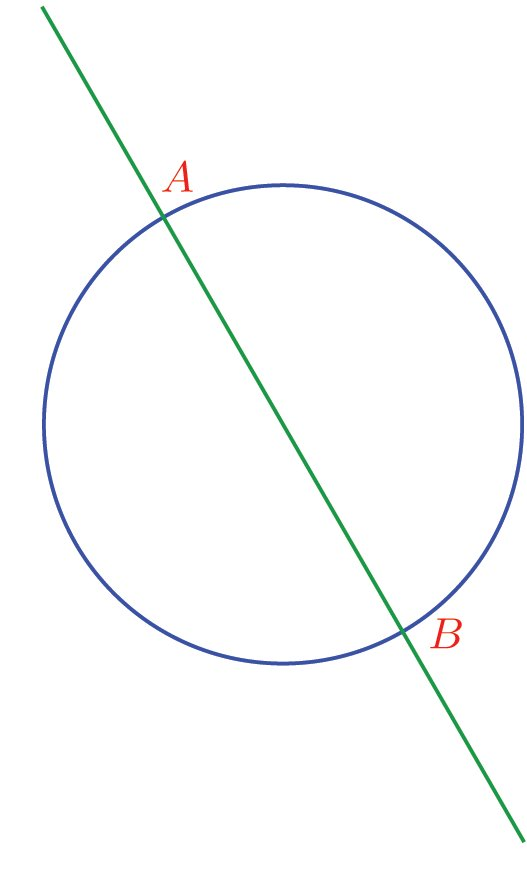<figcaption>Figure fig_ch08_p007_02 (Page 7)</figcaption></figure>
  <figure class="diagram-card" id="fig_ch08_p007_03"><figcaption>Figure fig_ch08_p007_03 (Page 7)</figcaption></figure>
  <div class="page-content">
    <p>വരയും വട്ടവും
ചിത്രം നോക്കൂ:</p>
    <p>വൃത്തത്തിലെ അ എന്ന ബിന്ദുവിൽക്കൂടിയുള്ള വ്യാസമാണ് അആ; ഇത് ഇരുവശത്തേക്കും അൽപം നീട്ടിയിട്ടുമുണ്ട്.
അ യിലൂടെ മറ്റൊരു ഞാൺ വരച്ച്, ഇതുപോലെ നീട്ടിയ-താണ് ഈ ചിത്രം.</p>
  </div>
</section><section class="page-section" id="page-8">
  <div class="page-header"><span class="page-number">Page 8</span></div>
  <figure class="diagram-card" id="fig_ch08_p008_01"><figcaption>Figure fig_ch08_p008_01 (Page 8)</figcaption></figure>
  <figure class="diagram-card" id="fig_ch08_p008_02"><figcaption>Figure fig_ch08_p008_02 (Page 8)</figcaption></figure>
  <figure class="diagram-card" id="fig_ch08_p008_03"><figcaption>Figure fig_ch08_p008_03 (Page 8)</figcaption></figure>
  <figure class="diagram-card" id="fig_ch08_p008_04">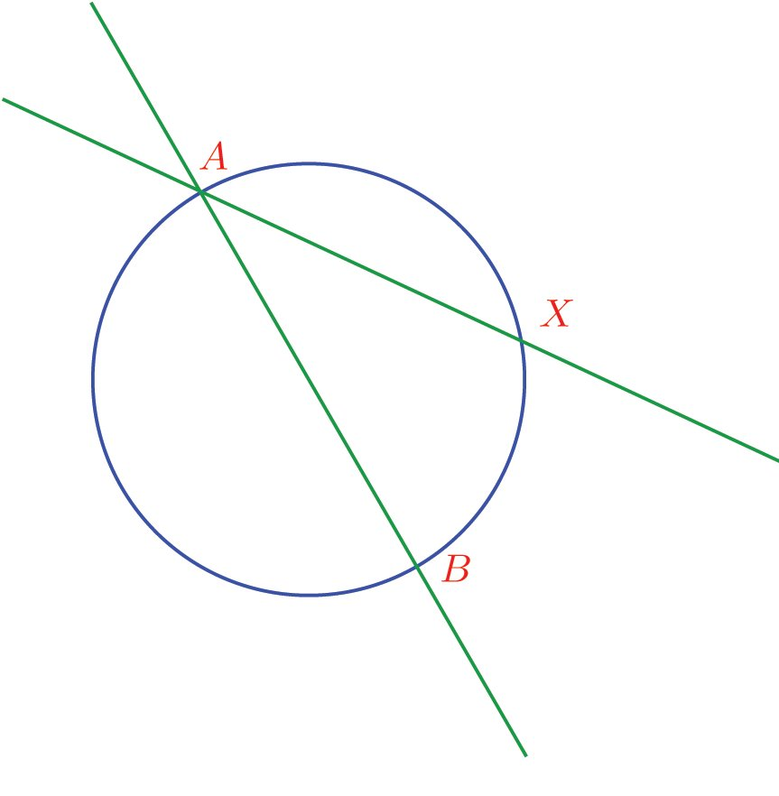<figcaption>Figure fig_ch08_p008_04 (Page 8)</figcaption></figure>
  <figure class="diagram-card" id="fig_ch08_p008_05"><figcaption>Figure fig_ch08_p008_05 (Page 8)</figcaption></figure>
  <figure class="diagram-card" id="fig_ch08_p008_06"><figcaption>Figure fig_ch08_p008_06 (Page 8)</figcaption></figure>
  <div class="page-content">
    <p>ഗണിതം ത
അ</p>
    <p>യുടെ സ്ഥാനം മാറ്റാതെ, ത അൽപംകൂടി അ യോട് അടുപ്പിച്ചാലോ?</p>
    <p>ജിയോജിബ്രയിൽ ഛ എന്ന ബിന്ദു കേന്ദ്രമായി ഒരു വൃത്തം വരച്ച് അതിൽ അ, ത
എന്നിങ്ങനെ രണ്ട് ബിന്ദുക്കൾ അടയാളപ്പെടുത്തുക. ഛ, അ എന്നീ ബിന്ദുക്കളും
അ, ത എന്നീ ബിന്ദുക്കളും യോജിപ്പിച്ചുകൊണ്ട് വരകൾ വരയ്ക്കുക. ത ന്റെ
സ്ഥാനം അ യിലേക്ക് അടുപ്പിക്കുമ്പോൾ
അത എന്ന വരയ്ക്ക് എന്താണ് സംഭവിക്കുന്നത് ? ത എന്ന ബിന്ദു അ യിലെ- ത്ത ഉമ്പോഴോ? ഛ, ത ഇവ യോജിപ്പിക്കുക. ത
ന്റെ സ്ഥാനം അ യിലേക്ക് അടുക്കുമ്പോൾ
ഛഅത, അഛത എന്നീ കോണുകൾക്ക് എന്ത്
മാറ്റമാണ് സംഭവിക്കുന്നതെന്ന് നോക്കുക.</p>
    <p>ഇങ്ങനെ ത വൃത്തത്തിലൂടെ അ യോട് കൂടുതൽ അടുപ്പിച്ചുകൊണ്ടേയിരുന്നാലോ?</p>
    <p>ചിത്രത്തിലെ ചുവന്ന വര, വൃത്തത്തെ അ യിൽ മാത്രം ഒന്ന് തൊടുന്നു.
അല്ലേ?
ഈ വരയെ വൃത്തത്തിലെ അ എന്ന
ബിന്ദുവിലെ തൊടുവര (മേിഴലി)േ
എന്നാണ് പറയുന്നത്. ചിത്രം ഒന്നുകൂടി നോക്കൂ. വ്യാസവും തൊടുവ- ര യും തമ്മി- എല- എന്ത- ങ്ക ഇലും
ബന്ധം കാണുന്നുണ്ടോ?
ഇതു വ്യക്തമാകാൻ, അത എന്ന
ഞാണിന്റെ കേന്ദ്ര- ഏകാൺ ഃ
ഈ</p>
    <p>എന്നെടുക്കാം.</p>
    <p>160</p>
  </div>
</section><section class="page-section" id="page-9">
  <div class="page-header"><span class="page-number">Page 9</span></div>
  <figure class="diagram-card" id="fig_ch08_p009_01"><figcaption>Figure fig_ch08_p009_01 (Page 9)</figcaption></figure>
  <figure class="diagram-card" id="fig_ch08_p009_02">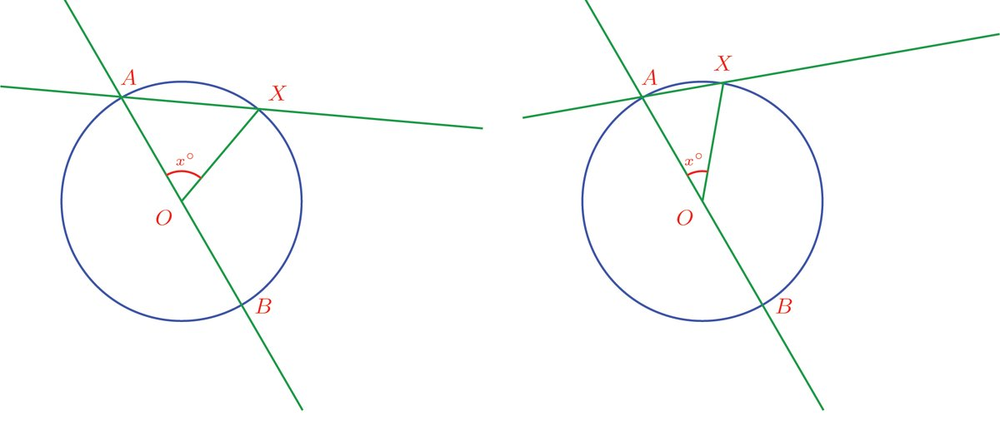<figcaption>Figure fig_ch08_p009_02 (Page 9)</figcaption></figure>
  <figure class="diagram-card" id="fig_ch08_p009_03"><figcaption>Figure fig_ch08_p009_03 (Page 9)</figcaption></figure>
  <figure class="diagram-card" id="fig_ch08_p009_04">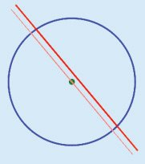<figcaption>Figure fig_ch08_p009_04 (Page 9)</figcaption></figure>
  <figure class="diagram-card" id="fig_ch08_p009_05"><figcaption>Figure fig_ch08_p009_05 (Page 9)</figcaption></figure>
  <figure class="diagram-card" id="fig_ch08_p009_06"><figcaption>Figure fig_ch08_p009_06 (Page 9)</figcaption></figure>
  <figure class="diagram-card" id="fig_ch08_p009_07"><figcaption>Figure fig_ch08_p009_07 (Page 9)</figcaption></figure>
  <div class="page-content">
    <p>എന്ന ബിന്ദു അ യോടടുപ്പിക്കുന്തോറും അത എന്ന ഞാണിന്റെ നീളവും,
അതിന്റെ കേന്ദ്രകോണും ചെറുതാകും; അയായത് ഃ എന്ന സംഖ-്യ, പൂജ-്യത്തോട-ടുക്കും.</p>
    <p>തൊടുവ-രകൾ</p>
    <p>ത</p>
    <p>ഞാണും വ്യാസവും തമ്മിലുള്ള കോണോ? അഛത
സമപാർശ-്വത്രികോണ-മായ-തിനാൽ, ഈ കോൺ</p>
    <p>ആണ്.</p>
    <p>1
1 ⎞
⎛
(180 − ഃ)ീ = ⎜⎝ 90 − ഃ⎟⎠
2
2</p>
    <p>ഈ</p>
    <p>എന്ന ബിന്ദു, എന്ന ബിന്ദുവിനോട് അടുക്കുന്തോറും, ഈ കോൺ യോട് അടുത്തടുത്തു
വരും. തൊടുവ-രയാകുമ്പോൾ, കൃത്യം ആകുകയും ചെയ്യും.
ത</p>
    <p>അ</p>
    <p>90ീ</p>
    <p>90ീ</p>
    <p>161</p>
    <p>നീങ്ങുന്ന വരകൾ</p>
    <p>ഈ ചിത്രം നോക്കൂ:
ഒരു വൃത്തവും, കേന്ദ്രത്തിലൂടെ ഒരു വര- യ ഉം. വര
അൽപം മുക- ള ഇ- ഏലക്കു
നീക്കിയാലോ?
വര വീണ്ടും വീണ്ടും നീക്കിക്കൊ- ണ്ട ഇ- ര ഉ- ന്ന ആൽ വൃത്തത്തിലെ ഒരേയൊരു ബിന്ദുവിൽക്കൂടിപ്പോകുന്ന വരയിലെത്തില്ലേ?
കേന്ദ്രവും, അവസാനം
കിട്ടിയ ബിന്ദുവും
യോജി- പ്പ ഇ- ക്ക ഉന്ന വര,
ഈ സമാ- ന്ത - ര - വ - ര കൾക്കെല്ലാം ലംബ- മ ആണല്ലോ.</p>
    <p>ജിയോജിബ്രയിൽ ഒരു വൃത്തവും അതിന്റെ
ഒരു ആരവും വരയ്ക്കുക. ആരത്തിൽ ഒരു
ബിന്ദു (ജീശി ഏീി ഛയഷലര)േ എടുത്ത് അതിലൂടെ
ആരത്തിന് ലംബം വരയ്ക്കുക. ബിന്ദുവിന്റെ
സ്ഥാനം മാറ്റി നോക്കൂ. ഈ ബിന്ദു- വൃത്തത്തി- എല- ത്ത ഉ- ഏമ്പാൾ വരയ് ക്ക ് എന്താണ്
സംഭവിക്കുന്നത്?ÿ</p>
  </div>
</section><section class="page-section" id="page-10">
  <div class="page-header"><span class="page-number">Page 10</span></div>
  <figure class="diagram-card" id="fig_ch08_p010_01"><figcaption>Figure fig_ch08_p010_01 (Page 10)</figcaption></figure>
  <figure class="diagram-card" id="fig_ch08_p010_02"><figcaption>Figure fig_ch08_p010_02 (Page 10)</figcaption></figure>
  <figure class="diagram-card" id="fig_ch08_p010_03"><figcaption>Figure fig_ch08_p010_03 (Page 10)</figcaption></figure>
  <figure class="diagram-card" id="fig_ch08_p010_04"><figcaption>Figure fig_ch08_p010_04 (Page 10)</figcaption></figure>
  <figure class="diagram-card" id="fig_ch08_p010_05"><figcaption>Figure fig_ch08_p010_05 (Page 10)</figcaption></figure>
  <div class="page-content">
    <p>ഗണിതം ത</p>
    <p>ഇത് ഒരു പൊതുത-ത-്വമായി പറയാം.</p>
    <p>വൃത്തത്തിലെ ഒരു ബിന്ദുവിലൂടെയുള്ള തൊടുവ-ര, ആ ബിന്ദുവിലൂടെയുള്ള വ്യാസ-ത്തിനു ലംബമാണ്.</p>
    <p>വൃത്ത- ത്ത ഇന് തൊടു- വ ര വര- യ ് ക്ക ആൻ
ജിയോ- ജ ഇബ്രയിലെ ഠമിഴലി എേഎടുത്ത്
വൃത്തത്തിലും തൊടുവര കടന്നുപോകേണ്ട ബിന്ദുവിലും ക്ലിക്ക് ചെയ്താൽ
മതി. ബിന്ദു വൃത്തത്തിലാണെങ്കിൽ ഒരു
തൊടുവര ലഭിക്കുമ-ല്ലോ. വൃത്തത്തിന്
പുറത്താണെങ്കിലോ?
വൃത്തത്തിന് അതിലെ ഒരു ബിന്ദുവിൽ
തൊടു- വ ര വരച്ച് അതിന്റെ ഠൃമരല ഛി
നൽകുക. തൊടുവര വരച്ച ബിന്ദുവിന്
അിശാമശേീി നൽകി നോക്കൂ.</p>
    <p>ഇതുപ-യോഗിച്ചുള്ള ചില കണക്കുകൾ നോക്കാം;
ചുവടെയുള്ള ചിത്രത്തിൽ മുകളിലെ വര, വൃത്തത്തിന്റെ
തൊടുവ-രയാണ്.</p>
    <p>ഈ ചിത്രം നോട്ടുബുക്കിൽ വരയ്ക്കാമോ?
ആദ്യം സെന്റിമീറ്റർ ആരത്തിൽ വൃത്തം വരയ്ക്കാം. കേന്ദ്രത്തിലൂടെ
വിലങ്ങനെ ഒരു വരയും വരയ്ക്കാം.
2</p>
    <p>ഈ വരയുമായി കോൺ ഉണ്ടാക്കുന്ന വരയാണ് വേണ്ടത്. വരയിലെ ഏതെങ്കിലും സ്ഥാനത്തുനിന്നും ചരിവിൽ വരച്ചാൽ
അത് തൊടുവ-രയാക-ണമെന്നില്ലല്ലോ.
25ീ</p>
    <p>25 ഈ</p>
    <p>162</p>
  </div>
</section><section class="page-section" id="page-11">
  <div class="page-header"><span class="page-number">Page 11</span></div>
  <figure class="diagram-card" id="fig_ch08_p011_01"><figcaption>Figure fig_ch08_p011_01 (Page 11)</figcaption></figure>
  <figure class="diagram-card" id="fig_ch08_p011_02"><figcaption>Figure fig_ch08_p011_02 (Page 11)</figcaption></figure>
  <figure class="diagram-card" id="fig_ch08_p011_03"><figcaption>Figure fig_ch08_p011_03 (Page 11)</figcaption></figure>
  <figure class="diagram-card" id="fig_ch08_p011_04"><figcaption>Figure fig_ch08_p011_04 (Page 11)</figcaption></figure>
  <figure class="diagram-card" id="fig_ch08_p011_05"><figcaption>Figure fig_ch08_p011_05 (Page 11)</figcaption></figure>
  <figure class="diagram-card" id="fig_ch08_p011_06">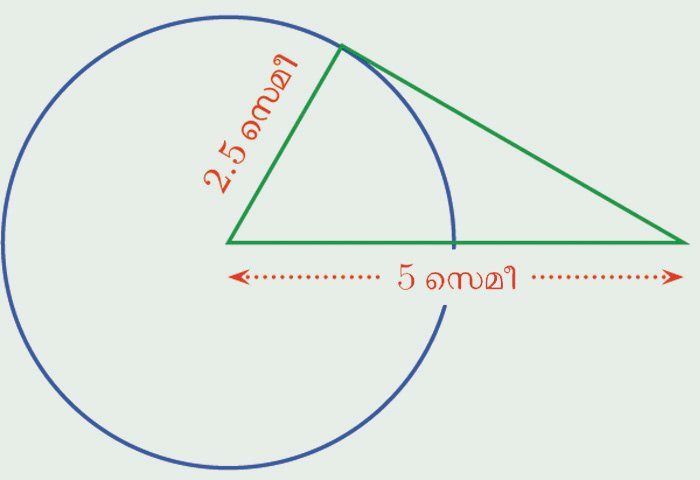<figcaption>Figure fig_ch08_p011_06 (Page 11)</figcaption></figure>
  <figure class="diagram-card" id="fig_ch08_p011_07">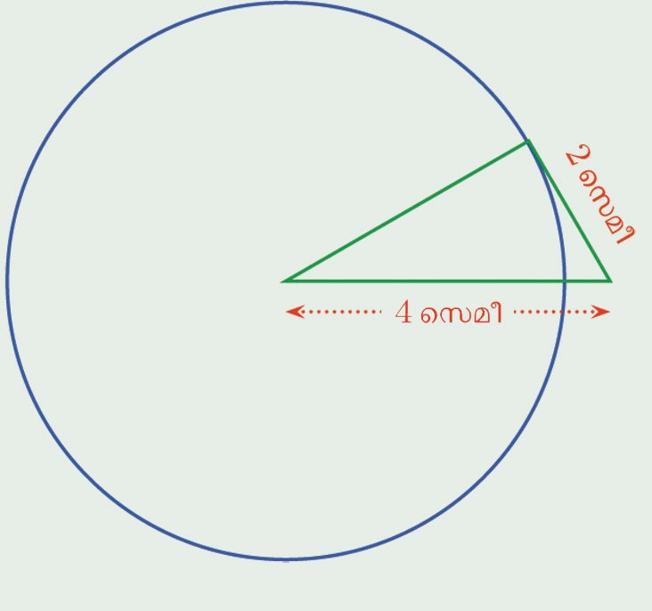<figcaption>Figure fig_ch08_p011_07 (Page 11)</figcaption></figure>
  <figure class="diagram-card" id="fig_ch08_p011_08">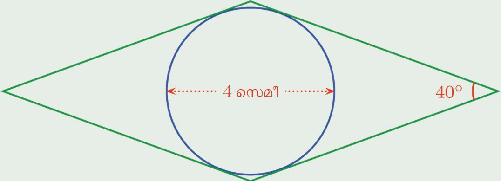<figcaption>Figure fig_ch08_p011_08 (Page 11)</figcaption></figure>
  <div class="page-content">
    <p>അപ്പോൾ മറിച്ചാലോചിക്കാം. വൃത്തത്തിലെ ഏതു ബിന്ദുവിലൂടെ തൊടുവര വരയ്ക്കണം? അത് ആദ-്യത്തെ വരയെ ചരിവിൽ കൂട്ടിമുട്ടണ-മല്ലോ.</p>
    <p>തൊടുവ-രകൾ</p>
    <p>25ീ</p>
    <p>ആദ-്യത്തെ ചിത്രം ഒന്ന്കൂടി നോക്കൂ. അതിലെ ത്രികോണ-ത്തിന്റെ മുകളിലത്തെ കോൺ മട്ടമാണ്, മറ്റൊരു കോൺ 25 യും.
അപ്പോൾ മൂന്നാമത്തെ കോൺ 65 .
ഇനി ചിത്രം മുഴുവ-നാക്കാമ-ല്ലോ.
ഈ</p>
    <p>ഈ</p>
    <p>(1)</p>
    <p>(2)</p>
    <p>ചുവടെയുള്ള രണ്ട് ചിത്രത്തിലും വൃത്തത്തിലെ ഒരു തൊടുവ-രയും,
തൊടുന്ന ബിന്ദുവിലേയ്ക്കുള്ള ആരവും കേന്ദ്രത്തിൽ നിന്നുള്ള
മറ്റൊരു വരയും ചേർത്ത് ത്രികോണം വരച്ചിരിക്കുന്നു.</p>
    <p>ഈ ചിത്രങ്ങൾ നോട്ടുബുക്കിൽ വരയ്ക്കുക.
ചിത്രത്തിലെ സമഭുജസാമാന്തരിക-ത്തിന്റെ
വശങ്ങളെല്ലാം വൃത്തത്തിന്റെ തൊടുവ-രകളാണ്.
ഈ ചിത്രം നോട്ടുബുക്കിൽ വരയ്ക്കുക.</p>
    <p>163</p>
  </div>
</section><section class="page-section" id="page-12">
  <div class="page-header"><span class="page-number">Page 12</span></div>
  <figure class="diagram-card" id="fig_ch08_p012_01"><figcaption>Figure fig_ch08_p012_01 (Page 12)</figcaption></figure>
  <figure class="diagram-card" id="fig_ch08_p012_02"><figcaption>Figure fig_ch08_p012_02 (Page 12)</figcaption></figure>
  <figure class="diagram-card" id="fig_ch08_p012_03">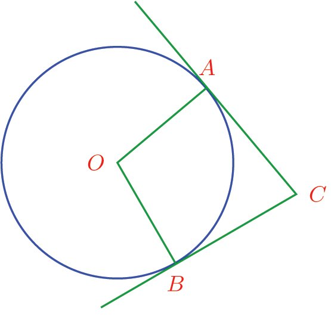<figcaption>Figure fig_ch08_p012_03 (Page 12)</figcaption></figure>
  <figure class="diagram-card" id="fig_ch08_p012_04"><figcaption>Figure fig_ch08_p012_04 (Page 12)</figcaption></figure>
  <figure class="diagram-card" id="fig_ch08_p012_05">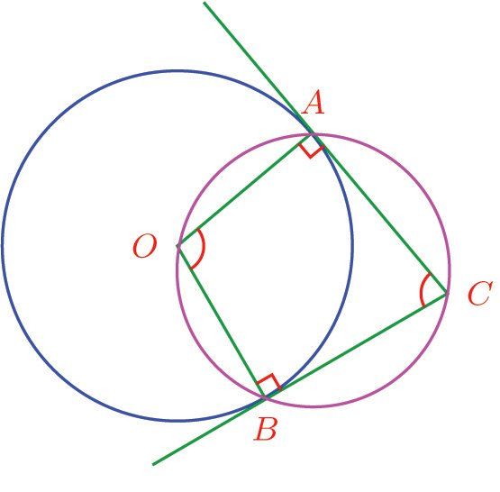<figcaption>Figure fig_ch08_p012_05 (Page 12)</figcaption></figure>
  <figure class="diagram-card" id="fig_ch08_p012_06"><figcaption>Figure fig_ch08_p012_06 (Page 12)</figcaption></figure>
  <div class="page-content">
    <p>ഗണിതം ത
(3)
(4)</p>
    <p>ഒരു വൃത്തത്തിന്റെ വ്യാസ-ത്തിന്റെ രണ്ടറ്റങ്ങളിൽ വരയ്ക്കുന്ന തൊടുവര-കൾ സമാന്തര-മാണെന്ന് തെളിയിക്കുക.
ഒരു വൃത്തത്തിലെ പരസ്പരം ലംബമായ രണ്ട് വ്യാസ-ങ്ങളുടെ അറ്റങ്ങളിൽ വരയ്ക്കുന്ന തൊടുവ-രകൾ ചേർന്നുണ്ടാകുന്നത് ഏതുതരം
ചതുർഭുജ-മാണ്?
തൊടുവ-രകളും കോണുകളും</p>
    <p>ഈ ചിത്രം നോക്കൂ:</p>
    <p>ഛ കേന്ദ്ര- മ ആയ വൃത്ത- ത്ത ഇലെ അ, ആ എന്നീ
ബിന്ദുക്കളിലൂടെയുള്ള തൊടുവ-രകൾ, ഇ എന്ന</p>
    <p>ബിന്ദുവിൽ കൂട്ടിമുട്ടുന്നു.
ഛഅഇആ എന്ന ചതുർഭുജ-ത്തിൽ അ, ആ എന്നീ</p>
    <p>എതിർമൂ- ല - ക - ള ഇലെ കോണു- ക ൾ മട്ട- മ ആണ് ;
അതിനാൽ, അവയുടെ തുക 180ീ. അപ്പോൾ
ഈ ചതു-ർ-ഭുജം ചക്രീയ-മാണ്.</p>
    <p>പേരുവിവരം</p>
    <p>തൊടുക എന്നർഥ- മ ഉള്ള മേിഴലൃല എന്ന
ലാറ്റിൻ വാക്കിൽനിന്നാണ്, തൊടുവ-രയ്ക്ക്
ഇംഗ്ലീഷിൽ മേിഴലി ഏഎന്ന പേരു വന്നത്.</p>
    <p>മേി എന്ന അളവിമേിഴലി ഏഎന്ന്</p>
    <p>ത്രികോ- ണ - മ ഇ- ത ഇ- യ ഇലെ</p>
    <p>ന്റെയും മുഴു- വ ൻ പേര്</p>
    <p>തന്നെയാണ-ല്ലോ. എന്താണ് ഇതിന് തൊടുവര-യുമായുള്ള ബന്ധം?
ഈ ചിത്രം നോക്കൂ:</p>
    <p>ഛ</p>
    <p>ഠ</p>
    <p>ഃ</p>
    <p>അതായത്,</p>
    <p>ഒരു വൃത്തത്തിന്റെ കേന്ദ്രവും, അതിലെ രണ്ട്
ബിന്ദുക്കളും, ഈ ബിന്ദുക്കളിലൂടെയുള്ള തൊടുവര- ക ൾ കൂട്ടി- മ ഉ- ട്ട ഉന്ന ബിന്ദുവും മൂല- ക - ള ആ- യ
ചതുർഭുജം ചക്രീയ-മാണ്.</p>
    <p>ഇത്തര-മൊരു ചതുർഭുജ-ത്തിലെ മറ്റു രണ്ട് കോണുകളുടെ തുകയും 180 തന്നെയാണല്ലോ.
ഈ</p>
    <p>ജ</p>
    <p>വൃത്തത്തിന്റെ ആരം 1 എന്നെടുത്താൽ, ജഠ
എന്ന തൊടുവ-രയുടെ നീളം മേി ഃ തന്നെയല്ലേ?</p>
    <p>164</p>
  </div>
</section><section class="page-section" id="page-13">
  <div class="page-header"><span class="page-number">Page 13</span></div>
  <figure class="diagram-card" id="fig_ch08_p013_01"><figcaption>Figure fig_ch08_p013_01 (Page 13)</figcaption></figure>
  <figure class="diagram-card" id="fig_ch08_p013_02"><figcaption>Figure fig_ch08_p013_02 (Page 13)</figcaption></figure>
  <figure class="diagram-card" id="fig_ch08_p013_03"><figcaption>Figure fig_ch08_p013_03 (Page 13)</figcaption></figure>
  <figure class="diagram-card" id="fig_ch08_p013_04"><figcaption>Figure fig_ch08_p013_04 (Page 13)</figcaption></figure>
  <figure class="diagram-card" id="fig_ch08_p013_05"><figcaption>Figure fig_ch08_p013_05 (Page 13)</figcaption></figure>
  <figure class="diagram-card" id="fig_ch08_p013_06"><figcaption>Figure fig_ch08_p013_06 (Page 13)</figcaption></figure>
  <figure class="diagram-card" id="fig_ch08_p013_07"><figcaption>Figure fig_ch08_p013_07 (Page 13)</figcaption></figure>
  <figure class="diagram-card" id="fig_ch08_p013_08"><figcaption>Figure fig_ch08_p013_08 (Page 13)</figcaption></figure>
  <figure class="diagram-card" id="fig_ch08_p013_09"><figcaption>Figure fig_ch08_p013_09 (Page 13)</figcaption></figure>
  <figure class="diagram-card" id="fig_ch08_p013_10"><figcaption>Figure fig_ch08_p013_10 (Page 13)</figcaption></figure>
  <figure class="diagram-card" id="fig_ch08_p013_11"><figcaption>Figure fig_ch08_p013_11 (Page 13)</figcaption></figure>
  <figure class="diagram-card" id="fig_ch08_p013_12"><figcaption>Figure fig_ch08_p013_12 (Page 13)</figcaption></figure>
  <figure class="diagram-card" id="fig_ch08_p013_13"><figcaption>Figure fig_ch08_p013_13 (Page 13)</figcaption></figure>
  <figure class="diagram-card" id="fig_ch08_p013_14"><figcaption>Figure fig_ch08_p013_14 (Page 13)</figcaption></figure>
  <figure class="diagram-card" id="fig_ch08_p013_15"><figcaption>Figure fig_ch08_p013_15 (Page 13)</figcaption></figure>
  <figure class="diagram-card" id="fig_ch08_p013_16"><figcaption>Figure fig_ch08_p013_16 (Page 13)</figcaption></figure>
  <figure class="diagram-card" id="fig_ch08_p013_17"><figcaption>Figure fig_ch08_p013_17 (Page 13)</figcaption></figure>
  <figure class="diagram-card" id="fig_ch08_p013_18"><figcaption>Figure fig_ch08_p013_18 (Page 13)</figcaption></figure>
  <figure class="diagram-card" id="fig_ch08_p013_19"><figcaption>Figure fig_ch08_p013_19 (Page 13)</figcaption></figure>
  <figure class="diagram-card" id="fig_ch08_p013_20"><figcaption>Figure fig_ch08_p013_20 (Page 13)</figcaption></figure>
  <figure class="diagram-card" id="fig_ch08_p013_21"><figcaption>Figure fig_ch08_p013_21 (Page 13)</figcaption></figure>
  <figure class="diagram-card" id="fig_ch08_p013_22"><figcaption>Figure fig_ch08_p013_22 (Page 13)</figcaption></figure>
  <figure class="diagram-card" id="fig_ch08_p013_23"><figcaption>Figure fig_ch08_p013_23 (Page 13)</figcaption></figure>
  <figure class="diagram-card" id="fig_ch08_p013_24"><figcaption>Figure fig_ch08_p013_24 (Page 13)</figcaption></figure>
  <figure class="diagram-card" id="fig_ch08_p013_25"><figcaption>Figure fig_ch08_p013_25 (Page 13)</figcaption></figure>
  <figure class="diagram-card" id="fig_ch08_p013_26"><figcaption>Figure fig_ch08_p013_26 (Page 13)</figcaption></figure>
  <figure class="diagram-card" id="fig_ch08_p013_27"><figcaption>Figure fig_ch08_p013_27 (Page 13)</figcaption></figure>
  <figure class="diagram-card" id="fig_ch08_p013_28"><figcaption>Figure fig_ch08_p013_28 (Page 13)</figcaption></figure>
  <figure class="diagram-card" id="fig_ch08_p013_29"><figcaption>Figure fig_ch08_p013_29 (Page 13)</figcaption></figure>
  <figure class="diagram-card" id="fig_ch08_p013_30"><figcaption>Figure fig_ch08_p013_30 (Page 13)</figcaption></figure>
  <figure class="diagram-card" id="fig_ch08_p013_31"><figcaption>Figure fig_ch08_p013_31 (Page 13)</figcaption></figure>
  <figure class="diagram-card" id="fig_ch08_p013_32"><figcaption>Figure fig_ch08_p013_32 (Page 13)</figcaption></figure>
  <figure class="diagram-card" id="fig_ch08_p013_33"><figcaption>Figure fig_ch08_p013_33 (Page 13)</figcaption></figure>
  <figure class="diagram-card" id="fig_ch08_p013_34"><figcaption>Figure fig_ch08_p013_34 (Page 13)</figcaption></figure>
  <figure class="diagram-card" id="fig_ch08_p013_35"><figcaption>Figure fig_ch08_p013_35 (Page 13)</figcaption></figure>
  <figure class="diagram-card" id="fig_ch08_p013_36"><figcaption>Figure fig_ch08_p013_36 (Page 13)</figcaption></figure>
  <figure class="diagram-card" id="fig_ch08_p013_37"><figcaption>Figure fig_ch08_p013_37 (Page 13)</figcaption></figure>
  <figure class="diagram-card" id="fig_ch08_p013_38"><figcaption>Figure fig_ch08_p013_38 (Page 13)</figcaption></figure>
  <figure class="diagram-card" id="fig_ch08_p013_39"><figcaption>Figure fig_ch08_p013_39 (Page 13)</figcaption></figure>
  <figure class="diagram-card" id="fig_ch08_p013_40"><figcaption>Figure fig_ch08_p013_40 (Page 13)</figcaption></figure>
  <figure class="diagram-card" id="fig_ch08_p013_41"><figcaption>Figure fig_ch08_p013_41 (Page 13)</figcaption></figure>
  <figure class="diagram-card" id="fig_ch08_p013_42"><figcaption>Figure fig_ch08_p013_42 (Page 13)</figcaption></figure>
  <figure class="diagram-card" id="fig_ch08_p013_43"><figcaption>Figure fig_ch08_p013_43 (Page 13)</figcaption></figure>
  <figure class="diagram-card" id="fig_ch08_p013_44"><figcaption>Figure fig_ch08_p013_44 (Page 13)</figcaption></figure>
  <figure class="diagram-card" id="fig_ch08_p013_45"><figcaption>Figure fig_ch08_p013_45 (Page 13)</figcaption></figure>
  <figure class="diagram-card" id="fig_ch08_p013_46"><figcaption>Figure fig_ch08_p013_46 (Page 13)</figcaption></figure>
  <figure class="diagram-card" id="fig_ch08_p013_47"><figcaption>Figure fig_ch08_p013_47 (Page 13)</figcaption></figure>
  <figure class="diagram-card" id="fig_ch08_p013_48"><figcaption>Figure fig_ch08_p013_48 (Page 13)</figcaption></figure>
  <figure class="diagram-card" id="fig_ch08_p013_49"><figcaption>Figure fig_ch08_p013_49 (Page 13)</figcaption></figure>
  <figure class="diagram-card" id="fig_ch08_p013_50"><figcaption>Figure fig_ch08_p013_50 (Page 13)</figcaption></figure>
  <figure class="diagram-card" id="fig_ch08_p013_51"><figcaption>Figure fig_ch08_p013_51 (Page 13)</figcaption></figure>
  <figure class="diagram-card" id="fig_ch08_p013_52"><figcaption>Figure fig_ch08_p013_52 (Page 13)</figcaption></figure>
  <figure class="diagram-card" id="fig_ch08_p013_53"><figcaption>Figure fig_ch08_p013_53 (Page 13)</figcaption></figure>
  <figure class="diagram-card" id="fig_ch08_p013_54"><figcaption>Figure fig_ch08_p013_54 (Page 13)</figcaption></figure>
  <figure class="diagram-card" id="fig_ch08_p013_55"><figcaption>Figure fig_ch08_p013_55 (Page 13)</figcaption></figure>
  <figure class="diagram-card" id="fig_ch08_p013_56"><figcaption>Figure fig_ch08_p013_56 (Page 13)</figcaption></figure>
  <figure class="diagram-card" id="fig_ch08_p013_57"><figcaption>Figure fig_ch08_p013_57 (Page 13)</figcaption></figure>
  <figure class="diagram-card" id="fig_ch08_p013_58"><figcaption>Figure fig_ch08_p013_58 (Page 13)</figcaption></figure>
  <figure class="diagram-card" id="fig_ch08_p013_59"><figcaption>Figure fig_ch08_p013_59 (Page 13)</figcaption></figure>
  <figure class="diagram-card" id="fig_ch08_p013_60"><figcaption>Figure fig_ch08_p013_60 (Page 13)</figcaption></figure>
  <figure class="diagram-card" id="fig_ch08_p013_61"><figcaption>Figure fig_ch08_p013_61 (Page 13)</figcaption></figure>
  <figure class="diagram-card" id="fig_ch08_p013_62"><figcaption>Figure fig_ch08_p013_62 (Page 13)</figcaption></figure>
  <figure class="diagram-card" id="fig_ch08_p013_63"><figcaption>Figure fig_ch08_p013_63 (Page 13)</figcaption></figure>
  <figure class="diagram-card" id="fig_ch08_p013_64"><figcaption>Figure fig_ch08_p013_64 (Page 13)</figcaption></figure>
  <figure class="diagram-card" id="fig_ch08_p013_65"><figcaption>Figure fig_ch08_p013_65 (Page 13)</figcaption></figure>
  <figure class="diagram-card" id="fig_ch08_p013_66"><figcaption>Figure fig_ch08_p013_66 (Page 13)</figcaption></figure>
  <figure class="diagram-card" id="fig_ch08_p013_67"><figcaption>Figure fig_ch08_p013_67 (Page 13)</figcaption></figure>
  <figure class="diagram-card" id="fig_ch08_p013_68"><figcaption>Figure fig_ch08_p013_68 (Page 13)</figcaption></figure>
  <figure class="diagram-card" id="fig_ch08_p013_69"><figcaption>Figure fig_ch08_p013_69 (Page 13)</figcaption></figure>
  <figure class="diagram-card" id="fig_ch08_p013_70"><figcaption>Figure fig_ch08_p013_70 (Page 13)</figcaption></figure>
  <figure class="diagram-card" id="fig_ch08_p013_71">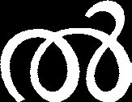<figcaption>Figure fig_ch08_p013_71 (Page 13)</figcaption></figure>
  <figure class="diagram-card" id="fig_ch08_p013_72"><figcaption>Figure fig_ch08_p013_72 (Page 13)</figcaption></figure>
  <figure class="diagram-card" id="fig_ch08_p013_73"><figcaption>Figure fig_ch08_p013_73 (Page 13)</figcaption></figure>
  <figure class="diagram-card" id="fig_ch08_p013_74"><figcaption>Figure fig_ch08_p013_74 (Page 13)</figcaption></figure>
  <figure class="diagram-card" id="fig_ch08_p013_75"><figcaption>Figure fig_ch08_p013_75 (Page 13)</figcaption></figure>
  <figure class="diagram-card" id="fig_ch08_p013_76"><figcaption>Figure fig_ch08_p013_76 (Page 13)</figcaption></figure>
  <figure class="diagram-card" id="fig_ch08_p013_77"><figcaption>Figure fig_ch08_p013_77 (Page 13)</figcaption></figure>
  <figure class="diagram-card" id="fig_ch08_p013_78"><figcaption>Figure fig_ch08_p013_78 (Page 13)</figcaption></figure>
  <figure class="diagram-card" id="fig_ch08_p013_79"><figcaption>Figure fig_ch08_p013_79 (Page 13)</figcaption></figure>
  <figure class="diagram-card" id="fig_ch08_p013_80"><figcaption>Figure fig_ch08_p013_80 (Page 13)</figcaption></figure>
  <figure class="diagram-card" id="fig_ch08_p013_81"><figcaption>Figure fig_ch08_p013_81 (Page 13)</figcaption></figure>
  <figure class="diagram-card" id="fig_ch08_p013_82"><figcaption>Figure fig_ch08_p013_82 (Page 13)</figcaption></figure>
  <figure class="diagram-card" id="fig_ch08_p013_83"><figcaption>Figure fig_ch08_p013_83 (Page 13)</figcaption></figure>
  <figure class="diagram-card" id="fig_ch08_p013_84"><figcaption>Figure fig_ch08_p013_84 (Page 13)</figcaption></figure>
  <figure class="diagram-card" id="fig_ch08_p013_85"><figcaption>Figure fig_ch08_p013_85 (Page 13)</figcaption></figure>
  <figure class="diagram-card" id="fig_ch08_p013_86"><figcaption>Figure fig_ch08_p013_86 (Page 13)</figcaption></figure>
  <figure class="diagram-card" id="fig_ch08_p013_87">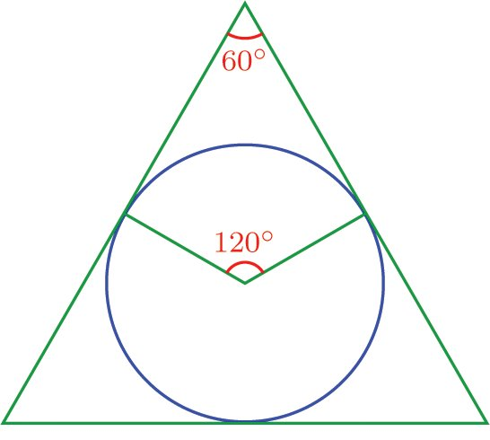<figcaption>Figure fig_ch08_p013_87 (Page 13)</figcaption></figure>
  <figure class="diagram-card" id="fig_ch08_p013_88">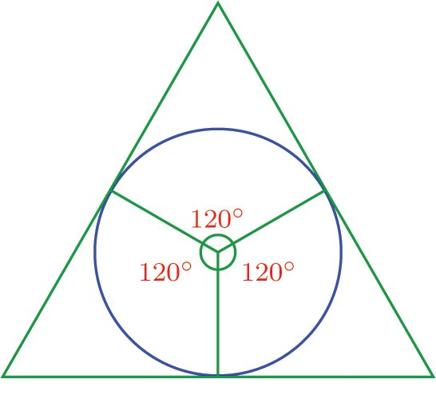<figcaption>Figure fig_ch08_p013_88 (Page 13)</figcaption></figure>
  <figure class="diagram-card" id="fig_ch08_p013_89"><figcaption>Figure fig_ch08_p013_89 (Page 13)</figcaption></figure>
  <figure class="diagram-card" id="fig_ch08_p013_90"><figcaption>Figure fig_ch08_p013_90 (Page 13)</figcaption></figure>
  <figure class="diagram-card" id="fig_ch08_p013_91"><figcaption>Figure fig_ch08_p013_91 (Page 13)</figcaption></figure>
  <figure class="diagram-card" id="fig_ch08_p013_92"><figcaption>Figure fig_ch08_p013_92 (Page 13)</figcaption></figure>
  <figure class="diagram-card" id="fig_ch08_p013_93"><figcaption>Figure fig_ch08_p013_93 (Page 13)</figcaption></figure>
  <figure class="diagram-card" id="fig_ch08_p013_94"><figcaption>Figure fig_ch08_p013_94 (Page 13)</figcaption></figure>
  <figure class="diagram-card" id="fig_ch08_p013_95"><figcaption>Figure fig_ch08_p013_95 (Page 13)</figcaption></figure>
  <figure class="diagram-card" id="fig_ch08_p013_96"><figcaption>Figure fig_ch08_p013_96 (Page 13)</figcaption></figure>
  <figure class="diagram-card" id="fig_ch08_p013_97"><figcaption>Figure fig_ch08_p013_97 (Page 13)</figcaption></figure>
  <figure class="diagram-card" id="fig_ch08_p013_98"><figcaption>Figure fig_ch08_p013_98 (Page 13)</figcaption></figure>
  <figure class="diagram-card" id="fig_ch08_p013_99"><figcaption>Figure fig_ch08_p013_99 (Page 13)</figcaption></figure>
  <figure class="diagram-card" id="fig_ch08_p013_100"><figcaption>Figure fig_ch08_p013_100 (Page 13)</figcaption></figure>
  <figure class="diagram-card" id="fig_ch08_p013_101"><figcaption>Figure fig_ch08_p013_101 (Page 13)</figcaption></figure>
  <figure class="diagram-card" id="fig_ch08_p013_102"><figcaption>Figure fig_ch08_p013_102 (Page 13)</figcaption></figure>
  <figure class="diagram-card" id="fig_ch08_p013_103"><figcaption>Figure fig_ch08_p013_103 (Page 13)</figcaption></figure>
  <figure class="diagram-card" id="fig_ch08_p013_104"><figcaption>Figure fig_ch08_p013_104 (Page 13)</figcaption></figure>
  <figure class="diagram-card" id="fig_ch08_p013_105"><figcaption>Figure fig_ch08_p013_105 (Page 13)</figcaption></figure>
  <figure class="diagram-card" id="fig_ch08_p013_106"><figcaption>Figure fig_ch08_p013_106 (Page 13)</figcaption></figure>
  <figure class="diagram-card" id="fig_ch08_p013_107"><figcaption>Figure fig_ch08_p013_107 (Page 13)</figcaption></figure>
  <figure class="diagram-card" id="fig_ch08_p013_108"><figcaption>Figure fig_ch08_p013_108 (Page 13)</figcaption></figure>
  <figure class="diagram-card" id="fig_ch08_p013_109"><figcaption>Figure fig_ch08_p013_109 (Page 13)</figcaption></figure>
  <figure class="diagram-card" id="fig_ch08_p013_110"><figcaption>Figure fig_ch08_p013_110 (Page 13)</figcaption></figure>
  <figure class="diagram-card" id="fig_ch08_p013_111"><figcaption>Figure fig_ch08_p013_111 (Page 13)</figcaption></figure>
  <figure class="diagram-card" id="fig_ch08_p013_112"><figcaption>Figure fig_ch08_p013_112 (Page 13)</figcaption></figure>
  <figure class="diagram-card" id="fig_ch08_p013_113"><figcaption>Figure fig_ch08_p013_113 (Page 13)</figcaption></figure>
  <figure class="diagram-card" id="fig_ch08_p013_114"><figcaption>Figure fig_ch08_p013_114 (Page 13)</figcaption></figure>
  <figure class="diagram-card" id="fig_ch08_p013_115">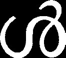<figcaption>Figure fig_ch08_p013_115 (Page 13)</figcaption></figure>
  <figure class="diagram-card" id="fig_ch08_p013_116"><figcaption>Figure fig_ch08_p013_116 (Page 13)</figcaption></figure>
  <figure class="diagram-card" id="fig_ch08_p013_117"><figcaption>Figure fig_ch08_p013_117 (Page 13)</figcaption></figure>
  <figure class="diagram-card" id="fig_ch08_p013_118"><figcaption>Figure fig_ch08_p013_118 (Page 13)</figcaption></figure>
  <figure class="diagram-card" id="fig_ch08_p013_119"><figcaption>Figure fig_ch08_p013_119 (Page 13)</figcaption></figure>
  <figure class="diagram-card" id="fig_ch08_p013_120"><figcaption>Figure fig_ch08_p013_120 (Page 13)</figcaption></figure>
  <figure class="diagram-card" id="fig_ch08_p013_121"><figcaption>Figure fig_ch08_p013_121 (Page 13)</figcaption></figure>
  <figure class="diagram-card" id="fig_ch08_p013_122"><figcaption>Figure fig_ch08_p013_122 (Page 13)</figcaption></figure>
  <figure class="diagram-card" id="fig_ch08_p013_123">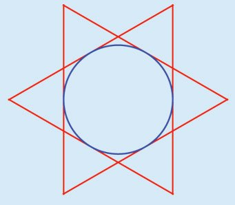<figcaption>Figure fig_ch08_p013_123 (Page 13)</figcaption></figure>
  <figure class="diagram-card" id="fig_ch08_p013_124">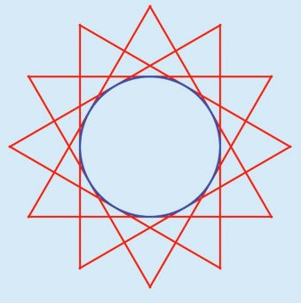<figcaption>Figure fig_ch08_p013_124 (Page 13)</figcaption></figure>
  <figure class="diagram-card" id="fig_ch08_p013_125">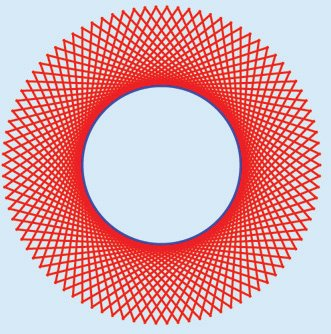<figcaption>Figure fig_ch08_p013_125 (Page 13)</figcaption></figure>
  <figure class="diagram-card" id="fig_ch08_p013_126"><figcaption>Figure fig_ch08_p013_126 (Page 13)</figcaption></figure>
  <figure class="diagram-card" id="fig_ch08_p013_127"><figcaption>Figure fig_ch08_p013_127 (Page 13)</figcaption></figure>
  <figure class="diagram-card" id="fig_ch08_p013_128"><figcaption>Figure fig_ch08_p013_128 (Page 13)</figcaption></figure>
  <figure class="diagram-card" id="fig_ch08_p013_129"><figcaption>Figure fig_ch08_p013_129 (Page 13)</figcaption></figure>
  <figure class="diagram-card" id="fig_ch08_p013_130"><figcaption>Figure fig_ch08_p013_130 (Page 13)</figcaption></figure>
  <figure class="diagram-card" id="fig_ch08_p013_131"><figcaption>Figure fig_ch08_p013_131 (Page 13)</figcaption></figure>
  <figure class="diagram-card" id="fig_ch08_p013_132"><figcaption>Figure fig_ch08_p013_132 (Page 13)</figcaption></figure>
  <figure class="diagram-card" id="fig_ch08_p013_133"><figcaption>Figure fig_ch08_p013_133 (Page 13)</figcaption></figure>
  <figure class="diagram-card" id="fig_ch08_p013_134"><figcaption>Figure fig_ch08_p013_134 (Page 13)</figcaption></figure>
  <figure class="diagram-card" id="fig_ch08_p013_135"><figcaption>Figure fig_ch08_p013_135 (Page 13)</figcaption></figure>
  <figure class="diagram-card" id="fig_ch08_p013_136"><figcaption>Figure fig_ch08_p013_136 (Page 13)</figcaption></figure>
  <figure class="diagram-card" id="fig_ch08_p013_137"><figcaption>Figure fig_ch08_p013_137 (Page 13)</figcaption></figure>
  <figure class="diagram-card" id="fig_ch08_p013_138"><figcaption>Figure fig_ch08_p013_138 (Page 13)</figcaption></figure>
  <figure class="diagram-card" id="fig_ch08_p013_139"><figcaption>Figure fig_ch08_p013_139 (Page 13)</figcaption></figure>
  <div class="page-content">
    <p>ചഠ-887-2-ങഅഠഒട-10-ങഢഛഘ.2</p>
    <p></p>
  </div>
</section><section class="page-section" id="page-14">
  <div class="page-header"><span class="page-number">Page 14</span></div>
  <figure class="diagram-card" id="fig_ch08_p014_01"><figcaption>Figure fig_ch08_p014_01 (Page 14)</figcaption></figure>
  <figure class="diagram-card" id="fig_ch08_p014_02"><figcaption>Figure fig_ch08_p014_02 (Page 14)</figcaption></figure>
  <figure class="diagram-card" id="fig_ch08_p014_03"><figcaption>Figure fig_ch08_p014_03 (Page 14)</figcaption></figure>
  <figure class="diagram-card" id="fig_ch08_p014_04"><figcaption>Figure fig_ch08_p014_04 (Page 14)</figcaption></figure>
  <figure class="diagram-card" id="fig_ch08_p014_05">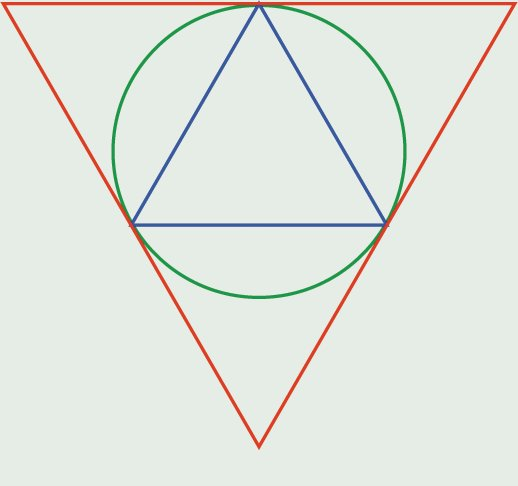<figcaption>Figure fig_ch08_p014_05 (Page 14)</figcaption></figure>
  <figure class="diagram-card" id="fig_ch08_p014_06"><figcaption>Figure fig_ch08_p014_06 (Page 14)</figcaption></figure>
  <figure class="diagram-card" id="fig_ch08_p014_07">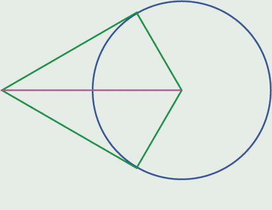<figcaption>Figure fig_ch08_p014_07 (Page 14)</figcaption></figure>
  <figure class="diagram-card" id="fig_ch08_p014_08"><figcaption>Figure fig_ch08_p014_08 (Page 14)</figcaption></figure>
  <div class="page-content">
    <p>ഗണിതം ത</p>
    <p>അപ്പോൾ, വൃത്തകേന്ദ്രത്തിൽ 120 ഇടവിട്ടു മൂന്ന് ആരങ്ങൾ വരച്ച്,- അവീ</p>
    <p>യുടെ അറ്റങ്ങളിലൂടെ തൊടുവ-രകൾ വരച്ചാൽ നമുക്കുവേണ്ട ത്രികോണമായി.
3 സെന്റിമീറ്റർ ആര- ത്ത ഇൽ ഒരു വൃത്തം വര- ച്ച ് , ഇങ്ങ- എന- എയാരു
സമഭുജത്രികോണം വരച്ചു നോക്കൂ.
(1) ആരം 2.5 സെന്റിമീറ്റർ ആയ ഒരു വൃത്തം വരയ്ക്കുക. വശങ്ങളെല്ലാം
ഈ വൃത്തത്തെ തൊടുന്നതും കോണുകൾ 40 , 60 , 80 യും ആയ
ത്രികോണം വരയ്ക്കുക.
(2) തന്നി- ര ഇ- ക്ക ഉന്ന ചിത്ര- ത്ത ഇലെ ചെറിയ (നീല)
ത്രികോണം സമഭുജ-മാണ്. അതിന്റെ മൂലക-ളിലൂടെ
പരിവൃത്തത്തിനു വരയ്ക്കുന്ന തൊടുവ-രക-ളാണ്
വലിയ (ചുവന്ന) ത്രികോണ-ത്തിന്റെ വശങ്ങ-ൾ.
ശ)
വലിയ ത്രികോണം സമഭുജ-മാണെന്നും,
അതിന്റെ വശങ്ങൾ ചെറിയ ത്രികോണത്തിന്റെ വശങ്ങളുടെ രണ്ട് മടങ്ങാണെന്നും
തെളിയിക്കുക.
ശശ)
ചെറിയ ത്രികോണ-ത്തിന്റെ വശങ്ങളുടെ നീളം 3 സെന്റിമീറ്റർ
ആയി ഈ ചിത്രം വരയ്ക്കുക.
(3) ഒരു വൃത്തത്തിന്റെ രണ്ട് തൊടുവ-രക-ളും, തൊടുന്ന
ഒരു വൃത്തം വരച്ച് അതിൽ ഒരു ബിന്ദു
ബിന്ദുക്കളിലൂടെയുള്ള ആരങ്ങളുമാണ് ചിത്രത്തിൽ
അടയാള-പ്പെടുത്തുക. അിഴഹല ംശവേ ഏശ്ലി
കാണിച്ചിരിക്കുന്നത്.
ടശ്വല ഉപയോഗിച്ച് ഈ ബിന്ദുവിലും
ഈ</p>
    <p>വൃത്ത- ഏക- ്രന്ദ- ത്ത ഇലും
ക്രമ- മ ആയി
ക്ലിക്കുചെയ്ത് കോണളവ് 120ീ എന്ന്
കൊടുത്താൽ വൃത്ത- ത്ത ഇൽ മറ്റൊരു
ബിന്ദു കിട്ടും. ഈ ബിന്ദുവിലും കേന്ദ്രത്തിലും ക്ലിക്കു- എചയ് ത ് 120ീ എന്ന്
കൊടുത്താൽ ഒരു ബിന്ദു കൂടി വൃത്തത്തിൽ ലഭിക്കും. ഈ മൂന്ന് ബിന്ദുക്കളിൽക്കൂടിയും വൃത്തത്തിനു തൊടുവരകൾ വരച്ച് അവ കൂട്ടിമുട്ടുന്ന ബിന്ദുക്കൾ അടയാള-പ്പെടുത്തുക. ടലഴാലി ഏഉപയോഗിച്ച് ഈ ബിന്ദുക്കൾ യോജിപ്പിച്ച്
ഒരു ത്രികോണം വര- യ ് ക്ക ഉ- ക . ഇനി
തൊടുവ-രകൾ മറച്ചുവ-യ്ക്കാം. ത്രികോണ- ത്ത ഇന്റെ വശ- ങ്ങ ൾക്ക് ഠൃമരല ഈി
നൽകിയ-ശേഷം വൃത്തത്തിൽ ആദ്യമെടുത്ത ബിന്ദുവിന് അിശാമശേീി നൽകി
നോക്കൂ.</p>
    <p>ശ)
ശശ)</p>
    <p>ഈ</p>
    <p>ഈ</p>
    <p>തൊടുവ-രക-ളുടെ നീളം തുല-്യമാണെന്ന്
തെളിയിക്കുക.
വൃത്തകേന്ദ്രവും, തൊടുവ-രകൾ ചേരുന്ന ബിന്ദുവും
യോജിപ്പിക്കുന്ന
വര, ആരങ്ങൾക്കിടയിലെ കോണിന്റെ
സമഭാജിയാണെന്ന്
തെളിയിക്കുക.
166</p>
  </div>
</section><section class="page-section" id="page-15">
  <div class="page-header"><span class="page-number">Page 15</span></div>
  <figure class="diagram-card" id="fig_ch08_p015_01"><figcaption>Figure fig_ch08_p015_01 (Page 15)</figcaption></figure>
  <figure class="diagram-card" id="fig_ch08_p015_02"><figcaption>Figure fig_ch08_p015_02 (Page 15)</figcaption></figure>
  <figure class="diagram-card" id="fig_ch08_p015_03"><figcaption>Figure fig_ch08_p015_03 (Page 15)</figcaption></figure>
  <figure class="diagram-card" id="fig_ch08_p015_04">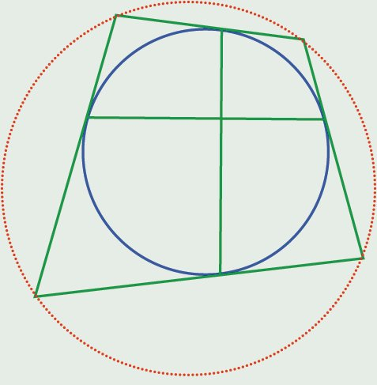<figcaption>Figure fig_ch08_p015_04 (Page 15)</figcaption></figure>
  <figure class="diagram-card" id="fig_ch08_p015_05"><figcaption>Figure fig_ch08_p015_05 (Page 15)</figcaption></figure>
  <figure class="diagram-card" id="fig_ch08_p015_06">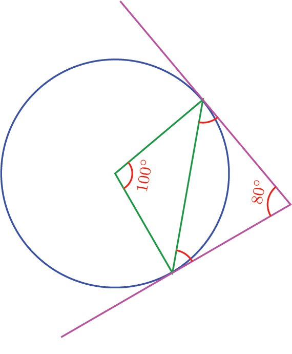<figcaption>Figure fig_ch08_p015_06 (Page 15)</figcaption></figure>
  <figure class="diagram-card" id="fig_ch08_p015_07"><figcaption>Figure fig_ch08_p015_07 (Page 15)</figcaption></figure>
  <div class="page-content">
    <p>തൊടുവ-രകൾ
ശശശ)</p>
    <p>(4)</p>
    <p>തൊടുന്ന ബിന്ദുക്കൾ യോജിപ്പിക്കുന്ന
ഞാണിന്റെ ലംബസ-മഭാജിയാണ് ഈ
വര എന്ന് തെളിയിക്കുക.</p>
    <p>ഒരു വൃത്തത്തിലെ പരസ്പരം ലംബമായ
രണ്ട് ഞാണുക-ളുടെ അറ്റങ്ങളിലൂടെയുള്ള തൊടുവര-കൾ വശങ്ങളായ ചതുർഭുജം ചക്രീയ-മാണെന്ന് തെളിയിക്കുക. (വൃത്തങ്ങൾ എന്ന പാഠത്തിൽ</p>
    <p>ഞാണും കോണും ചാപവും എന്ന ഭാഗ-</p>
    <p>ത്തിലെ കണക്ക് (7) നോക്കുക)</p>
    <p>ഇതിലെ ഒരു ഞാൺ വ്യാസ-മായാൽ ഏതു തരം
ചതുർ-ഭുജ-മാണ് കിട്ടുന്നത്? രണ്ട് ഞാണും വ്യാസമായാലോ?</p>
    <p>ഞാണും തൊടുവ-രയും</p>
    <p>വൃത്തത്തിലെ ഒരു ഞാണിന്റെ രണ്ടറ്റത്തുമുള്ള തൊടുവ-രകളാണ് ചിത്രത്തിൽ
കാണിച്ചിരിക്കുന്നത്.</p>
    <p>ഇതിൽ, തൊടുവ-രകൾ ചേരുന്ന കോൺ 80ീ ആണെന്ന- റ ഇ- യ ആം. ഞാണും തൊടു- വ - ര - ക ളും തമ്മി- ല ഉള്ള
കോണുകളോ?</p>
    <p>167</p>
  </div>
</section><section class="page-section" id="page-16">
  <div class="page-header"><span class="page-number">Page 16</span></div>
  <figure class="diagram-card" id="fig_ch08_p016_01"><figcaption>Figure fig_ch08_p016_01 (Page 16)</figcaption></figure>
  <figure class="diagram-card" id="fig_ch08_p016_02">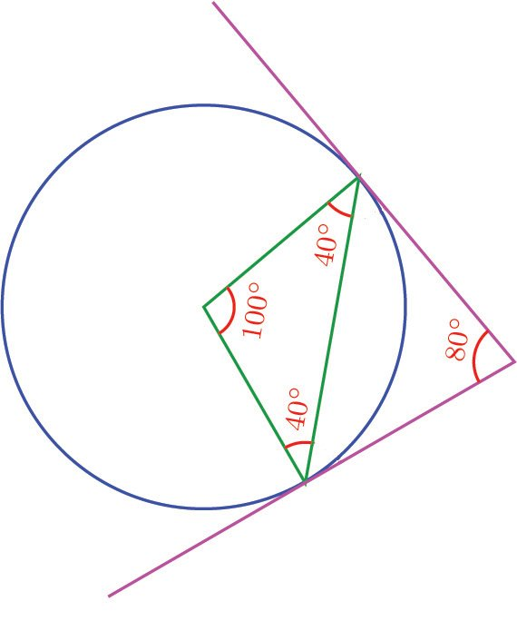<figcaption>Figure fig_ch08_p016_02 (Page 16)</figcaption></figure>
  <figure class="diagram-card" id="fig_ch08_p016_03">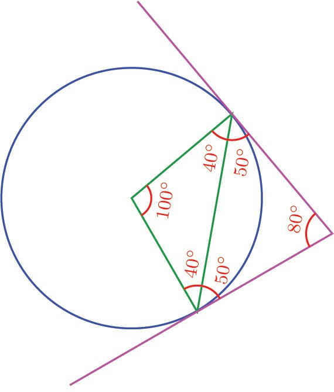<figcaption>Figure fig_ch08_p016_03 (Page 16)</figcaption></figure>
  <figure class="diagram-card" id="fig_ch08_p016_04">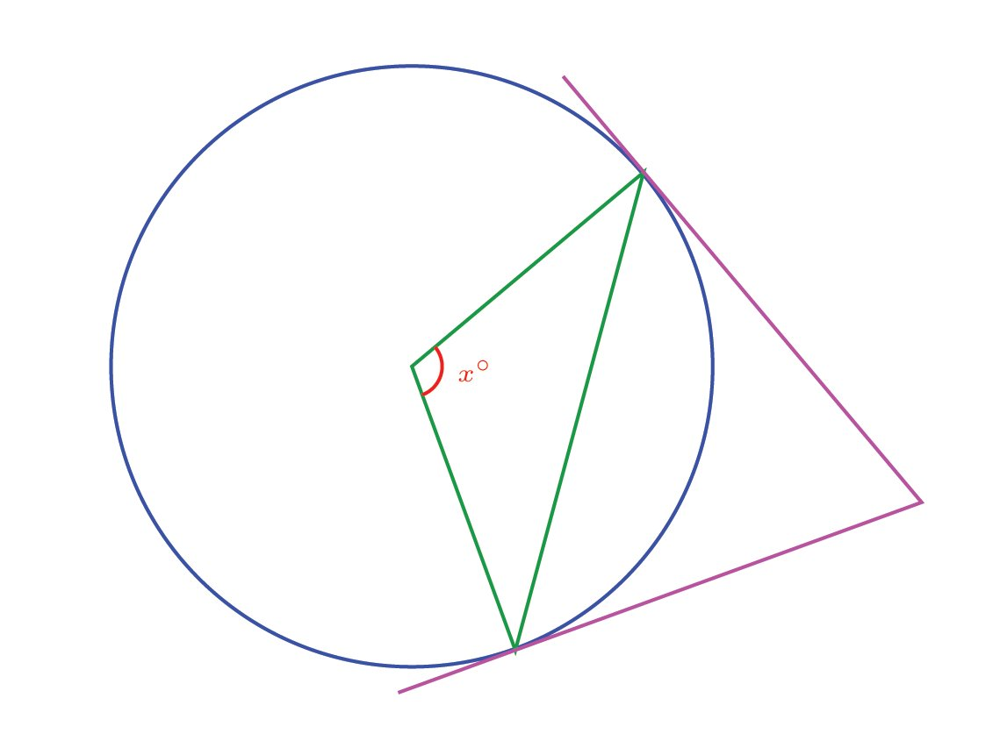<figcaption>Figure fig_ch08_p016_04 (Page 16)</figcaption></figure>
  <div class="page-content">
    <p>ഗണിതം ത
ചിത്രത്തിലെ പച്ച ത്രികോണ-ത്തിന്റെ രണ്ട് വശങ്ങൾ തുല-്യമായ-തിനാൽ അവയ്ക്കെതിരെയുള്ള
കോണുകളും തുല-്യമാണ്. ഇവയുടെ തുക
180 − 100 = 80 . അപ്പോൾ ഓരോന്നും 40 .
ഈ</p>
    <p>ഈ</p>
    <p>ഈ</p>
    <p>ഈ</p>
    <p>ആരവും തൊടുവ-രയും തമ്മിലുള്ള കോൺ 90 ആണല്ലോ; അപ്പോൾ
ഞാണും തൊടുവ-രയുമായുള്ള കോൺ 90 − 40 = 50
ഈ</p>
    <p>ഈ</p>
    <p>ഈ</p>
    <p>ഈ</p>
    <p>പരപ്പളവ് പ്രശ്നം</p>
    <p>ചുവടെയുള്ള ചിത്രത്തിൽ, പച്ച ഭാഗത്തിന്റെ പരപ്പളവ് എത്രയാണ്?
8 സെ.മീ.</p>
    <p>ഇത്, ചാപത്തിന്റെ കേന്ദ്രകോണിന്റെ പകുതിയാണല്ലോ?
ഏതു ചാപത്തിനും ഇതു ശരിയാണോ? ഇതു പരിശോധിക്കാൻ, ഞാണിന്റെ കേന്ദ്രകോൺ ഃ എന്നെടുത്തുനോക്കാം.
ഈ</p>
    <p>168</p>
  </div>
</section><section class="page-section" id="page-17">
  <div class="page-header"><span class="page-number">Page 17</span></div>
  <figure class="diagram-card" id="fig_ch08_p017_01"><figcaption>Figure fig_ch08_p017_01 (Page 17)</figcaption></figure>
  <figure class="diagram-card" id="fig_ch08_p017_02">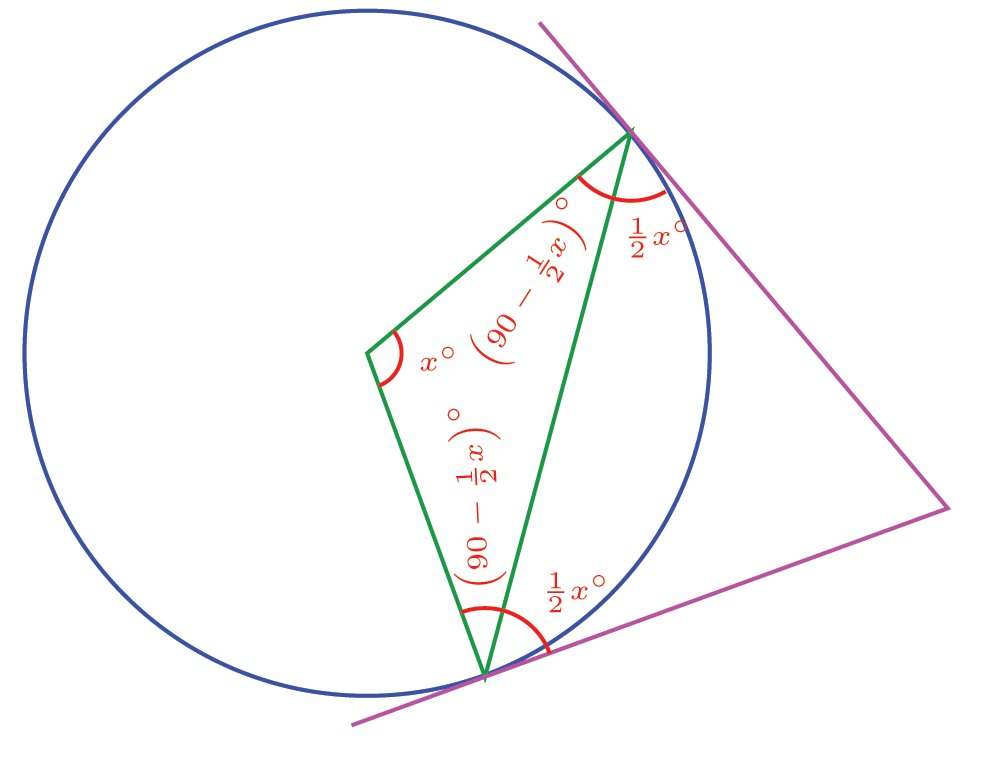<figcaption>Figure fig_ch08_p017_02 (Page 17)</figcaption></figure>
  <figure class="diagram-card" id="fig_ch08_p017_03"><figcaption>Figure fig_ch08_p017_03 (Page 17)</figcaption></figure>
  <figure class="diagram-card" id="fig_ch08_p017_04">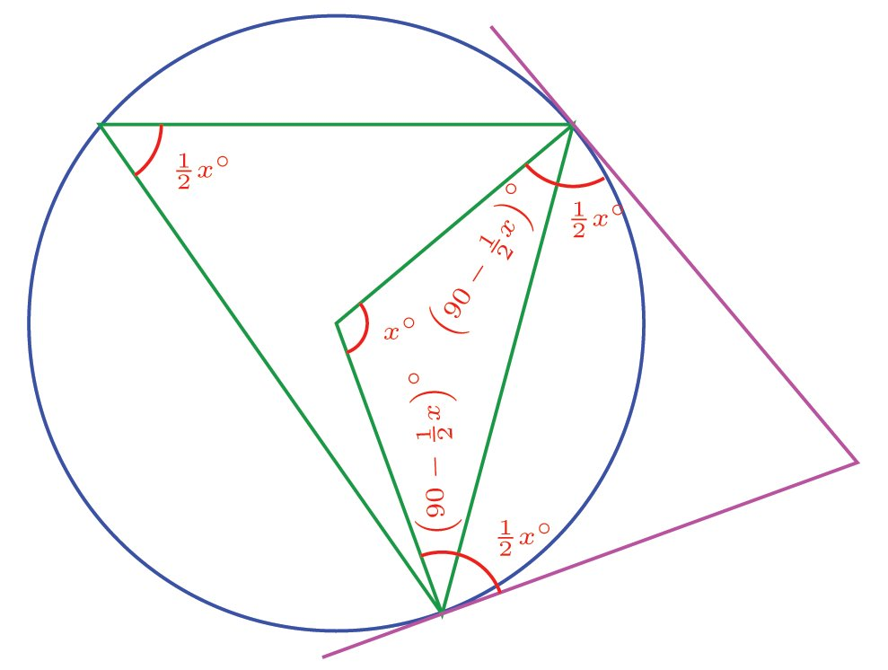<figcaption>Figure fig_ch08_p017_04 (Page 17)</figcaption></figure>
  <figure class="diagram-card" id="fig_ch08_p017_05"><figcaption>Figure fig_ch08_p017_05 (Page 17)</figcaption></figure>
  <div class="page-content">
    <p>തൊടുവ-രകൾ</p>
    <p>അപ്പോൾ പച്ച ത്രികോണ-ത്തിലെ മറ്റു
രണ്ട് കോണുകൾ
1
1 ⎞
⎛
(180 − ഃ)ീ = ⎜⎝ 90 − ഃ⎟⎠
2
2</p>
    <p>ഈ</p>
    <p>തൊടുവ-രയും ആരവും തമ്മിലുള്ള
കോൺ 90 ആയതിനാൽ, ഇനി തൊടുവരയും ഞാണും തമ്മിലുള്ള കോൺ
ഃ എന്ന് കാണാമ-ല്ലോ.
ഈ</p>
    <p>1
2</p>
    <p>ഈ</p>
    <p>ജിയോ- ജ ഇബ്രയിൽ ഒരു വൃത്തം
വരച്ച് അതിൽ ഒരു ഞാണും,
ഞാണിന്റെ രണ്ട് അറ്റങ്ങളിലൂ-െടയുള്ള തൊടുവ-രകളും വരയ്ക്കുക.
ഞാണിന്റെ കേന്ദ്രകോണും, ഞാൺ
തൊടു- വ - ര - യ ഉ- മ ആയി ഉണ്ടാ- ക്ക ഉന്ന
കോണും അടയാള-പ്പെടുത്തുക. ഈ
കോണു- ക ൾ തമ്മിൽ എന്താണ്
ബന്ധം? ÿപല ഞാണുകൾ വരച്ചു
നോക്കൂ.</p>
    <p>വൃത്തത്തിലെ ഒരു ഞാണിന്റെ രണ്ടറ്റങ്ങളിലൂടെയുള്ള തൊടുവ-രകൾ
ഞാണുമായി ഉണ്ടാക്കുന്ന കോൺ, ഞാണിന്റെ കേന്ദ്രകോണിന്റെ പകുതിയാണ്.</p>
    <p>വൃത്തത്തിന്റെ വലിയ ഭാഗത്ത് ഞാണുണ്ടാക്കുന്ന കോണും കേന്ദ്രകോണിന്റെ
പകുതിയാണ-ല്ലോ. (വൃത്തങ്ങൾ എന്ന പാഠഭാഗം)</p>
    <p>169</p>
  </div>
</section><section class="page-section" id="page-18">
  <div class="page-header"><span class="page-number">Page 18</span></div>
  <figure class="diagram-card" id="fig_ch08_p018_01"><figcaption>Figure fig_ch08_p018_01 (Page 18)</figcaption></figure>
  <figure class="diagram-card" id="fig_ch08_p018_02">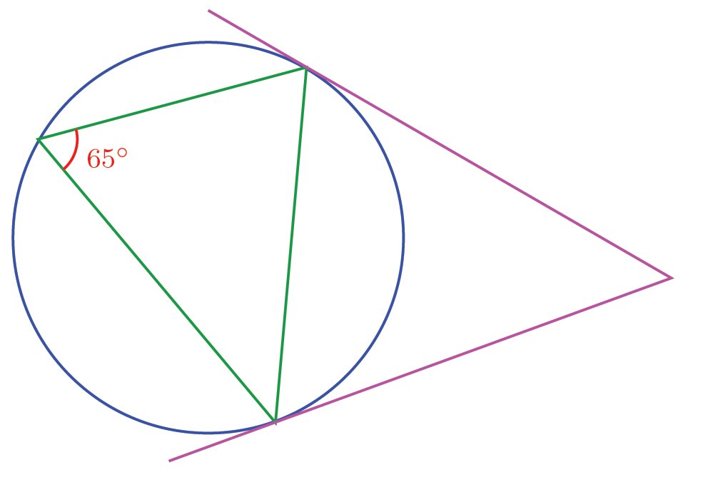<figcaption>Figure fig_ch08_p018_02 (Page 18)</figcaption></figure>
  <figure class="diagram-card" id="fig_ch08_p018_03">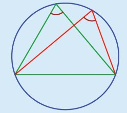<figcaption>Figure fig_ch08_p018_03 (Page 18)</figcaption></figure>
  <figure class="diagram-card" id="fig_ch08_p018_04"><figcaption>Figure fig_ch08_p018_04 (Page 18)</figcaption></figure>
  <figure class="diagram-card" id="fig_ch08_p018_05">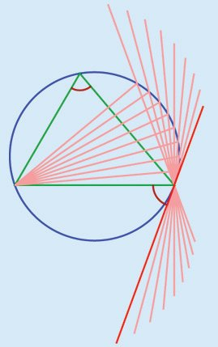<figcaption>Figure fig_ch08_p018_05 (Page 18)</figcaption></figure>
  <figure class="diagram-card" id="fig_ch08_p018_06"><figcaption>Figure fig_ch08_p018_06 (Page 18)</figcaption></figure>
  <figure class="diagram-card" id="fig_ch08_p018_07"><figcaption>Figure fig_ch08_p018_07 (Page 18)</figcaption></figure>
  <div class="page-content">
    <p>ഗണിതം</p>
    <p>ത</p>
    <p>അപ്പോൾ ഈ ചിത്രത്തിൽ തൊടുവ-രകൾ ഞാണുമായുണ്ടാക്കുന്ന കോൺ
എന്താണ്?</p>
    <p>മാറാത്ത കോൺ</p>
    <p>ഒരേ വൃത്തഭാഗത്തിലെ കോണുകൾ
തുല്യമാണെന്ന് കണ്ടല്ലോ:
ജ</p>
    <p>വലതുവശത്തെ കോണുകൾ 65 തന്നെ</p>
    <p>ആ</p>
    <p>അ</p>
    <p>ഈ</p>
    <p>ജആ അൽപം നീട്ടി വരയ്ക്കാം:
ത</p>
    <p>ജ</p>
    <p>ആ</p>
    <p>അ</p>
    <p>ഥ</p>
    <p>ഇനി ജ വൃത്തത്തിലൂടെ നീങ്ങി, ആ യിലെത്തിയാലോ?</p>
    <p>തൊടു- വ - ര - ക ൾ ഞാണിന്റെ ഇട- ത ഉ- വ - ശ ത്ത് ഉണ്ടാക്കുന്ന
കോണുകൾ 180ീ − 65ീ = 115ീ. ഇത്, വൃത്തത്തിന്റെ ചെറിയ
ഭാഗത്ത് ഞാണുണ്ടാക്കുന്ന കോൺ തന്നെയല്ലേ?</p>
    <p>ത</p>
    <p>ആ</p>
    <p>അ</p>
    <p>ഥ</p>
    <p>തഥ എന്ന വര ആ യിലെ തൊടുവ-രയാകും;</p>
    <p>കോണൊട്ടു മാറുന്നുമില്ല.</p>
    <p>അപ്പോൾ, ഞാൺ അതിന്റെ അറ്റങ്ങളിലെ തൊടുവ-രക-ളുമായി
ഉണ്ടാക്കുന്ന കോണുക-ളും, വൃത്തത്തിലുണ്ടാക്കുന്ന കോണുകളും തമ്മിലുള്ള ബന്ധം ഇങ്ങനെ വരച്ചു കാണിക്കാം.</p>
    <p>170</p>
  </div>
</section><section class="page-section" id="page-19">
  <div class="page-header"><span class="page-number">Page 19</span></div>
  <figure class="diagram-card" id="fig_ch08_p019_01"><figcaption>Figure fig_ch08_p019_01 (Page 19)</figcaption></figure>
  <figure class="diagram-card" id="fig_ch08_p019_02">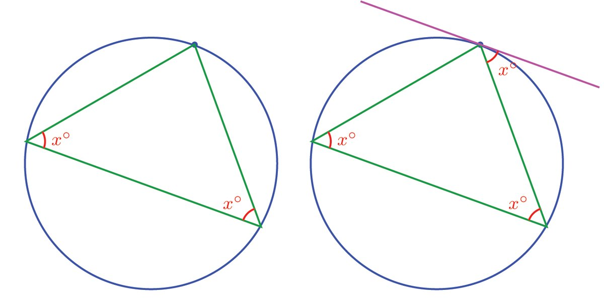<figcaption>Figure fig_ch08_p019_02 (Page 19)</figcaption></figure>
  <figure class="diagram-card" id="fig_ch08_p019_03"><figcaption>Figure fig_ch08_p019_03 (Page 19)</figcaption></figure>
  <figure class="diagram-card" id="fig_ch08_p019_04">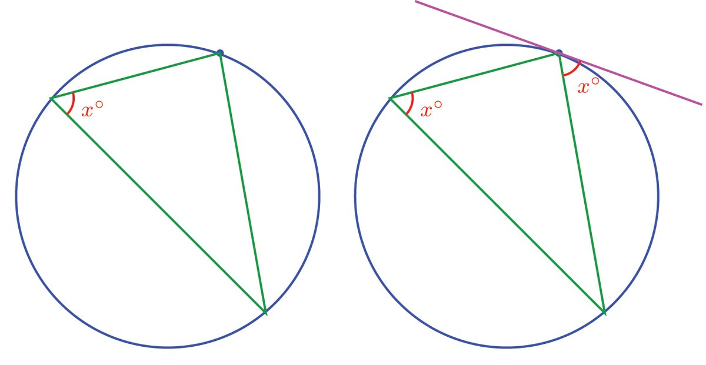<figcaption>Figure fig_ch08_p019_04 (Page 19)</figcaption></figure>
  <figure class="diagram-card" id="fig_ch08_p019_05"><figcaption>Figure fig_ch08_p019_05 (Page 19)</figcaption></figure>
  <figure class="diagram-card" id="fig_ch08_p019_06"><figcaption>Figure fig_ch08_p019_06 (Page 19)</figcaption></figure>
  <div class="page-content">
    <p>തൊടുവ-രകൾ</p>
    <p>ഇങ്ങനെ എഴുതുകയും ചെയ്യാം.</p>
    <p>വൃത്തത്തിലെ ഒരു ഞാൺ അതിന്റെ അറ്റത്തുള്ള തൊടുവ-രയുമായി
ഒരു വശത്ത് ഉണ്ടാക്കുന്ന കോൺ, മറുവ-ശത്തുള്ള വൃത്തഭാഗത്ത്
ഉണ്ടാക്കുന്ന കോണിനു തുല-്യമാണ്.</p>
    <p>വൃത്ത- ത്ത ഇലെ ഒരു ബിന്ദു- വ ഇ- ല ഊടെ തൊടു- വ ര വര- യ ് ക്ക ഉ- ന്ന - ത ് , ഈ
ബിന്ദുവിലൂടെയുള്ള വ്യാസ-ത്തിന് ലംബം വരച്ചാണ-ല്ലോ. കേന്ദ്രം അറിയില്ലെങ്കിലും തൊടുവര വരയ്ക്കാൻ, മുകളിലെഴുതിയ തത്വം ഉപയോഗിക്കാം.</p>
    <p>ബിന്ദുവിലൂടെ ഒരു ഞാൺ വരച്ച്, അത് വൃത്തത്തിന്റെ ഒരു ഭാഗത്തുണ്ടാക്കുന്ന കോൺ, ഞാണിന്റെ മറുഭാഗത്ത് ഉണ്ടാക്കിയാൽ മതി.</p>
    <p>ഒരു വൃത്തം വരയ് ക്ക ഉക. വൃത്ത
ത്തിലെ അ, ആ എന്നീ ബിന്ദുക്കളിലൂടെ
തൊടു- വ ര വരച്ച് തൊടുവരയും
തമ്മി- ല ഉള്ള കോണു- ക ൾ
ത്രികോണം സമപാർശ്വമായി വരച്ചാൽ, താഴത്തെ വശത്തിനു ഞാണും
അടയാള-പ്പെടുത്തുക. വൃത്തത്തിൽ
സമാന്തരമായി ബിന്ദുവിലൂടെ ഒരു വര വരച്ചാൽ മതി.
ഒരു ബിന്ദു ഇ അടയാള-പ്പെടുത്തി അഇ,
ആഇ
അപ്പോൾ ഒരു വൃത്തത്തിലെ ഏതെങ്കിലും ബിന്ദുവിലൂടെ തൊടു- ഇവ വരച്ച് ∠അഇആ അടയാള-പ്പെടുക. ഈ കോണുകൾ തമ്മിലുള്ള
വര വരയ്ക്കാൻ, ആദ്യം ഈ ബിന്ദു കേന്ദ്രമായ ഒരു വൃത്ത- ത്തുബന്ധാണ്? അ, ആ, ഇ എന്നീ ബിന്ദുചാപം വരച്ച്, അത് ആദ്യത്തെ വൃത്തത്തെ മുറിച്ചു കടക്കുന്ന ക്കളുടെമെന്ത
സ്ഥാനം മാറ്റി നോക്കൂ.</p>
    <p>ബിന്ദുക്കൾ യോജിപ്പിക്കുക.</p>
    <p>171</p>
  </div>
</section><section class="page-section" id="page-20">
  <div class="page-header"><span class="page-number">Page 20</span></div>
  <figure class="diagram-card" id="fig_ch08_p020_01"><figcaption>Figure fig_ch08_p020_01 (Page 20)</figcaption></figure>
  <figure class="diagram-card" id="fig_ch08_p020_02"><figcaption>Figure fig_ch08_p020_02 (Page 20)</figcaption></figure>
  <figure class="diagram-card" id="fig_ch08_p020_03"><figcaption>Figure fig_ch08_p020_03 (Page 20)</figcaption></figure>
  <figure class="diagram-card" id="fig_ch08_p020_04"><figcaption>Figure fig_ch08_p020_04 (Page 20)</figcaption></figure>
  <figure class="diagram-card" id="fig_ch08_p020_05"><figcaption>Figure fig_ch08_p020_05 (Page 20)</figcaption></figure>
  <figure class="diagram-card" id="fig_ch08_p020_06"><figcaption>Figure fig_ch08_p020_06 (Page 20)</figcaption></figure>
  <figure class="diagram-card" id="fig_ch08_p020_07"><figcaption>Figure fig_ch08_p020_07 (Page 20)</figcaption></figure>
  <figure class="diagram-card" id="fig_ch08_p020_08"><figcaption>Figure fig_ch08_p020_08 (Page 20)</figcaption></figure>
  <figure class="diagram-card" id="fig_ch08_p020_09"><figcaption>Figure fig_ch08_p020_09 (Page 20)</figcaption></figure>
  <figure class="diagram-card" id="fig_ch08_p020_10"><figcaption>Figure fig_ch08_p020_10 (Page 20)</figcaption></figure>
  <div class="page-content">
    <p>ത</p>
    <p>ഗണിതം</p>
    <p>മറിയുന്ന കോണുകൾ</p>
    <p>വൃത്ത- ത്ത ഇലെ ഇരു- ഭ ആ- ഗ - ങ്ങ ളി- ല ഉള്ള
കോണുകൾ അനുപൂര-കമാണല്ലോ:
ജ
ഃത്ഥ
അ</p>
    <p>ആ</p>
    <p>(180 − ഃ)ത്ഥ
ഝ</p>
    <p>നേരത്തെ ചെയ്തതുപോലെ വരകൾ
നീട്ടിവ-രയ്ക്കാം,</p>
    <p>ഇനി തൊടുവര വരയ്ക്കേണ്ട ബിന്ദുവിലൂടെ, ഈ വരയ്ക്ക്
സമാന്തര-മായ വര വരച്ചാൽ മതി.</p>
    <p>ത</p>
    <p>ജ</p>
    <p>(180 − ഃ)ത്ഥ
ഃത്ഥ
അ</p>
    <p>ഡ
ആ</p>
    <p>(180 − ഃ)ത്ഥ
ഃത്ഥ</p>
    <p>ഝ
ഥ</p>
    <p>ഢ</p>
    <p>(1)</p>
    <p>ജ വൃത്തത്തിലൂടെ ഝ വിലേക്കു നീങ്ങിയാലോ?
ത</p>
    <p>ജ</p>
    <p>(180 − ഃ)ത്ഥ</p>
    <p>അ</p>
    <p>ഃത്ഥ</p>
    <p>ഡ</p>
    <p>(180 − ഃ)ത്ഥ</p>
    <p>ആ</p>
    <p>ഃത്ഥ</p>
    <p>ചിത്രത്തിലെ ചെറിയ ത്രികോണത്തിന്റെ മൂലക-ളിലൂടെ പരിവൃത്തത്തിനു വര- യ ് ക്ക ഉന്ന തൊടു- വ - ര കളാണ്, വലിയ ത്രികോണ-ത്തിന്റെ വശങ്ങൾ.</p>
    <p>ഝ
ഥ</p>
    <p>ഢ</p>
    <p>അജ യുടെ താഴെ ഃത്ഥ യും, മുക- ള ഇൽ
(180 − ഃ)ത്ഥ ഉം ആണ്. ചലന-ത്തിലുടനീളം അങ്ങനെത-ന്നെയല്ലേ?</p>
    <p>വലിയ ത്രികോണ-ത്തിന്റെ കോണുകൾ
കണക്കാക്കുക.
172</p>
  </div>
</section><section class="page-section" id="page-21">
  <div class="page-header"><span class="page-number">Page 21</span></div>
  <figure class="diagram-card" id="fig_ch08_p021_01"><figcaption>Figure fig_ch08_p021_01 (Page 21)</figcaption></figure>
  <figure class="diagram-card" id="fig_ch08_p021_02"><figcaption>Figure fig_ch08_p021_02 (Page 21)</figcaption></figure>
  <figure class="diagram-card" id="fig_ch08_p021_03"><figcaption>Figure fig_ch08_p021_03 (Page 21)</figcaption></figure>
  <figure class="diagram-card" id="fig_ch08_p021_04">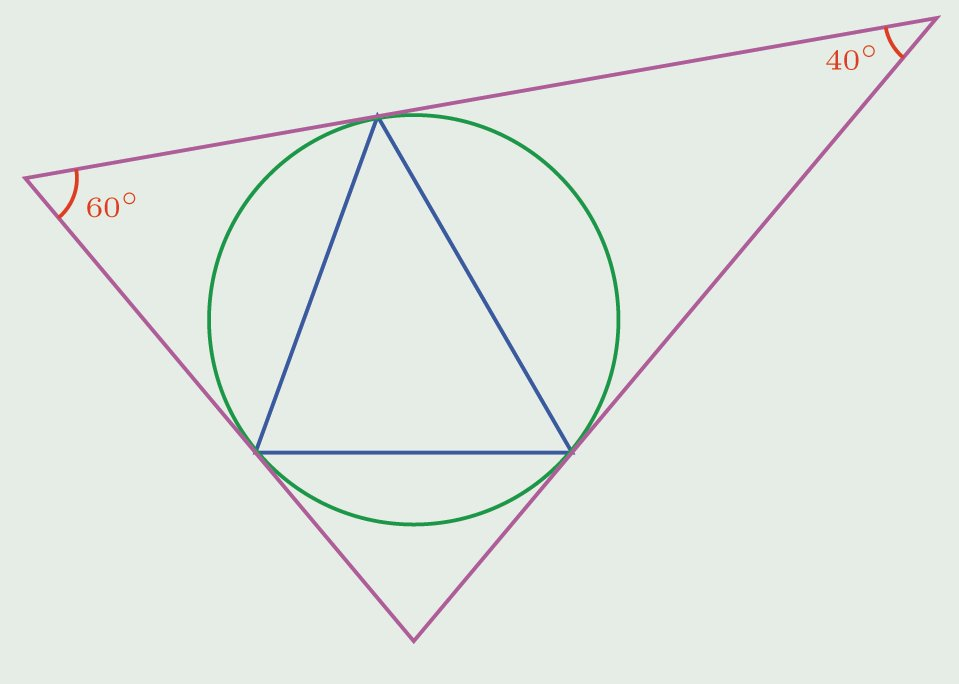<figcaption>Figure fig_ch08_p021_04 (Page 21)</figcaption></figure>
  <figure class="diagram-card" id="fig_ch08_p021_05">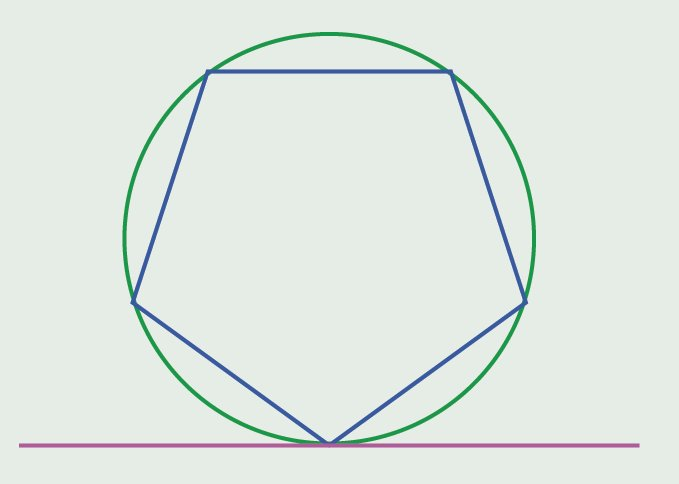<figcaption>Figure fig_ch08_p021_05 (Page 21)</figcaption></figure>
  <figure class="diagram-card" id="fig_ch08_p021_06"><figcaption>Figure fig_ch08_p021_06 (Page 21)</figcaption></figure>
  <div class="page-content">
    <p>തൊടുവ-രകൾ
(2)</p>
    <p>(3)</p>
    <p>(4)</p>
    <p>ചിത്രത്തിലെ ചെറിയ ത്രികോണത്തിന്റെ മൂലക-ളിലൂടെ പരിവൃത്തത്തിനു വരയ്ക്കുന്ന തൊടുവ-രക-ളാണ്, വലിയ ത്രികോണ-ത്തിന്റെ വശങ്ങൾ.
ചെറിയ ത്രികോണ-ത്തിന്റെ കോണുകൾ കണക്കാക്കുക.
ചിത്രത്തിൽ, അആഇ എന്ന ത്രികോണത്തിന്റെ മൂലക-ളിലൂടെ പരിവൃത്തത്തിനു
വരച്ച തൊടുവ-രക-ളാണ് ജഝ, ഞട, ഠഡ
എന്നീ വരകൾ.
ചിത്രത്തിലെ തുല-്യമായ കോണുകൾ
തരംതിരിച്ച് എഴുതുക.
ചിത്രത്തിൽ സമപ-ഞ്ചഭുജ-ത്തിന്റെ ഒരു മൂലയിൽക്കൂടി അതിന്റെ പരിവൃത്തത്തിന് തൊടുവര വരച്ചിരിക്കുന്നു.
തൊടുവ-രയും, തൊടുന്ന ബിന്ദുവിലൂടെയുള്ള
പഞ്ച- ഭ ഉ- ജ - ത്ത ഇന്റെ വശ- ങ്ങ ളും തമ്മി- ല ഉള്ള
കോണുകൾ കണക്കാക്കുക.</p>
    <p>പുറത്തുനിന്നും തൊടുവര
ഈ ചിത്രം നോക്കൂ.
വൃത്ത- ത്ത ഇനു പുറ- ത്ത ഉള്ള ഒരു ബിന്ദു വൃത്തകേന്ദ്രവുമായി യോജിപ്പിച്ച് നീട്ടി വരച്ചിരിക്കുന്നു.
അത് വൃത്തത്തെ രണ്ട് ബിന്ദുക്കളിൽ മുറിച്ചു കടക്കുന്നു. ഈ ബിന്ദുക്കൾ, ഒരു വ്യാസ-ത്തിന്റെ അറ്റങ്ങളുമാണ്.
വൃത്തത്തിനു പുറത്തുള്ള ഈ ബിന്ദുതന്നെ, വൃത്തത്തി- ന ഉ- ള്ള ഇൽ കേന്ദ്ര- ത്ത ഇ- ന ൽപം മുക- ള ഇലോ
താഴെയോ ആയ ഓരോ ബിന്ദുവുമായി യോജിപ്പിച്ചു
വരച്ചാലോ?
173</p>
  </div>
</section><section class="page-section" id="page-22">
  <div class="page-header"><span class="page-number">Page 22</span></div>
  <figure class="diagram-card" id="fig_ch08_p022_01"><figcaption>Figure fig_ch08_p022_01 (Page 22)</figcaption></figure>
  <figure class="diagram-card" id="fig_ch08_p022_02"><figcaption>Figure fig_ch08_p022_02 (Page 22)</figcaption></figure>
  <figure class="diagram-card" id="fig_ch08_p022_03"><figcaption>Figure fig_ch08_p022_03 (Page 22)</figcaption></figure>
  <figure class="diagram-card" id="fig_ch08_p022_04"><figcaption>Figure fig_ch08_p022_04 (Page 22)</figcaption></figure>
  <figure class="diagram-card" id="fig_ch08_p022_05">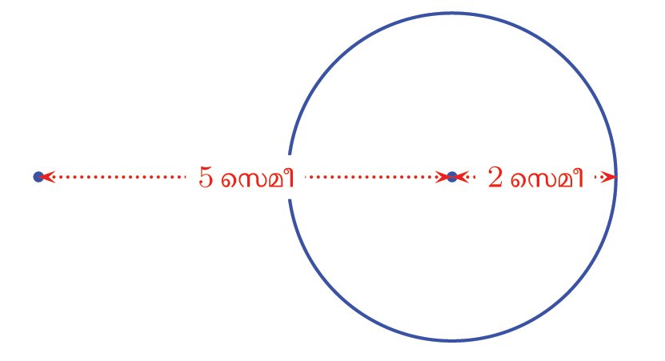<figcaption>Figure fig_ch08_p022_05 (Page 22)</figcaption></figure>
  <div class="page-content">
    <p>ഗണിതം ത</p>
    <p>വര വൃത്തത്തെ മുറിച്ചു കടക്കുന്ന ബിന്ദുക്കൾ അൽപംകൂടി അടുത്തു. ഇങ്ങനെ
തുടർന്നാലോ?</p>
    <p>അടുത്തടുത്തുവരുന്ന രണ്ട് ബിന്ദുക്കളിൽ വൃത്തത്തെ മുറിച്ചുക-ടക്കുന്ന വരകൾക്ക്, ഒരു ഘട്ടം കഴിയുമ്പോൾ വൃത്തവുമായി ഒരു ബന്ധവുമില്ലാതാകുന്നു.
പക്ഷേ അതിനിട-യിലെവിടെയോ, മുകളിലും താഴെയുമായി രണ്ട് വരകൾ
വൃത്തത്തെ ഒന്ന് തൊടുക മാത്രം ചെയ്യില്ലേ?</p>
    <p>ഒരു വൃത്തത്തിനു പുറത്തുള്ള ഒരു ബിന്ദുവിൽ നിന്ന് വൃത്തത്തിലേക്ക്
രണ്ട് തൊടുവ-രകൾ വരയ്ക്കാം.</p>
    <p>വരയ്ക്കാമെന്ന് പറഞ്ഞത-ല്ലാതെ ഇങ്ങനെ ഒരു ജോടി തൊടുവരകൾ
എങ്ങനെ വരയ്ക്കാമെന്ന് പറഞ്ഞില്ലല്ലോ. ഈ ചിത്രം നോക്കൂ.</p>
    <p>174</p>
  </div>
</section><section class="page-section" id="page-23">
  <div class="page-header"><span class="page-number">Page 23</span></div>
  <figure class="diagram-card" id="fig_ch08_p023_01"><figcaption>Figure fig_ch08_p023_01 (Page 23)</figcaption></figure>
  <figure class="diagram-card" id="fig_ch08_p023_02"><figcaption>Figure fig_ch08_p023_02 (Page 23)</figcaption></figure>
  <figure class="diagram-card" id="fig_ch08_p023_03">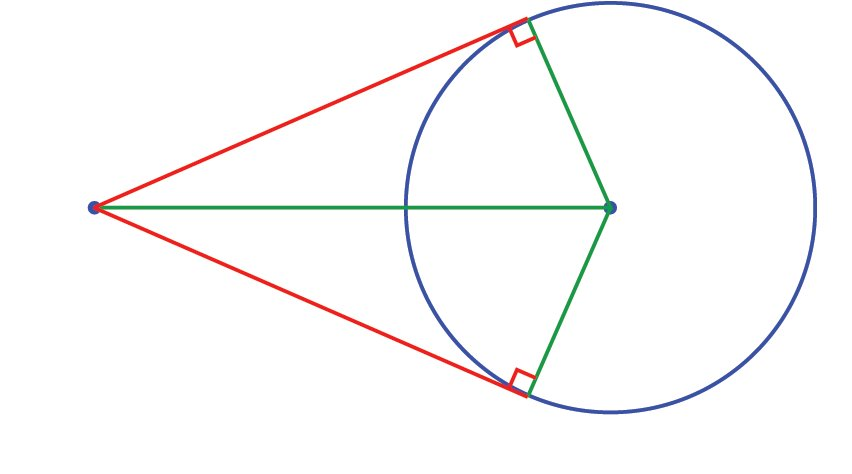<figcaption>Figure fig_ch08_p023_03 (Page 23)</figcaption></figure>
  <figure class="diagram-card" id="fig_ch08_p023_04">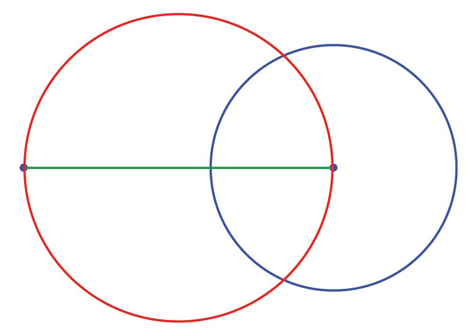<figcaption>Figure fig_ch08_p023_04 (Page 23)</figcaption></figure>
  <figure class="diagram-card" id="fig_ch08_p023_05"><figcaption>Figure fig_ch08_p023_05 (Page 23)</figcaption></figure>
  <div class="page-content">
    <p>തൊടുവ-രകൾ
ആരം 2 സെന്റിമീറ്ററായ വൃത്തത്തിന്റെ കേന്ദ്രത്തിൽ നിന്ന് 5 സെന്റിമീറ്റർ
അകലെ ബിന്ദു അടയാള-പ്പെടുത്തിയിട്ടുണ്ട്.
ഈ ബിന്ദുവിൽനിന്ന് വൃത്തത്തിന് രണ്ട് തൊടുവ-രകൾ വരയ്ക്കുന്നതെങ്ങനെ?
വരച്ചുക-ഴിഞ്ഞാൽ എങ്ങനെയായിരിക്കുമെന്ന് ആലോചിച്ചാൽ, വരയ്ക്കാനുള്ള വഴി ഒരു പക്ഷേ തെളിഞ്ഞു വരും.</p>
    <p>പുറത്തുനിന്നുള്ള ബിന്ദുവിൽനിന്നും, വൃത്തകേന്ദ്രത്തിൽ നിന്നും പരസ്പരം
ലംബമായ രണ്ട് ജോടി വരക-ളാണ് വേണ്ടത്.
ഇങ്ങനെ വരയ്ക്കുന്ന ലംബജോടിക-ളെല്ലാം കൂട്ടിമുട്ടുന്നത് പുറത്തെ
ബിന്ദുവും വൃത്തകേന്ദ്രവും യോജിപ്പിക്കുന്ന വര വ്യാസമായ വൃത്തത്തിലാണെന്ന് വൃത്തങ്ങൾ എന്ന പാഠത്തിൽ കണ്ടല്ലോ.</p>
    <p>എന്ന ബിന്ദു കേന്ദ്ര- മ ആയി ഒരു
വൃത്തം ജിയോജിബ്രയിൽ വരച്ച്
അതിൽ അ, ആ എന്നീ ബിന്ദുക്കൾ അടനമുക്കു വേണ്ട ലംബജോടിയിൽ, ഒരു വര ആദ-്യവൃത്തത്തിന്റെ യാളപ്പെടുത്തുക. ഈ ബിന്ദുക്കളിആരം തന്നെയാക-ണം. അതായ-ത്, വരകൾ കൂട്ടിമുട്ടുന്നത് ആദ്യ- ലൂടെ വൃത്തത്തിന് തൊടുവ-രകൾ
വൃത്തത്തിലാക-ണം. അതിന് പഴയ വൃത്തവും പുതിയ വൃത്തവും വരച്ച് അവ കൂട്ടിമുട്ടുന്ന ബിന്ദു ഇ അടയാള-പ്പെടുത്തുക. ചതുർഭുജം ഛഅഇആ
മുറിച്ചു കടക്കുന്ന ഒരു ബിന്ദുവിലൂടെ വരച്ചാൽപ്പോരെ?
വരച്ചു നോക്കൂ. ഇത് ചക്രീയമാണോ?
ഇനി വരയ്ക്കാമല്ലോ: ആദ-്യം, പുറത്തെ ബിന്ദുവും വൃത്തകേ- ഇശൃരഹല വേൃീൗഴവ ഠവൃലല ജീശി എേഉപയോന്ദ്രവും യോജിപ്പിക്കുന്ന വര വ്യാസ-മായി ഒരു വൃത്തം വരയ്ക്കുക. ഗിച്ച് ഛ, അ, ആ എന്നീ ബിന്ദു- ക്ക ളിൽക്കൂടി കടന്നുപോകുന്ന വൃത്തം
വരച്ചു നോക്കാം. അ, ആ ഇവയുടെ
സ്ഥാനം മാറ്റിനോക്കൂ. ഇവ അടുത്തടുത്തു വരുമ്പോൾ ഇ യ്ക്ക് എന്താണ്
സംഭവിക്കുന്നത്? അകന്നു പോകുമ്പോഴോ? ഈ ബിന്ദുക്കൾ ഒരു വ്യാസത്തിന്റെ അഗ്രബിന്ദുക്കളാകുമ്പോൾ
എന്താണ് സംഭവിക്കുന്നത്?
ഛ</p>
    <p>175</p>
  </div>
</section><section class="page-section" id="page-24">
  <div class="page-header"><span class="page-number">Page 24</span></div>
  <figure class="diagram-card" id="fig_ch08_p024_01"><figcaption>Figure fig_ch08_p024_01 (Page 24)</figcaption></figure>
  <figure class="diagram-card" id="fig_ch08_p024_02"><figcaption>Figure fig_ch08_p024_02 (Page 24)</figcaption></figure>
  <figure class="diagram-card" id="fig_ch08_p024_03">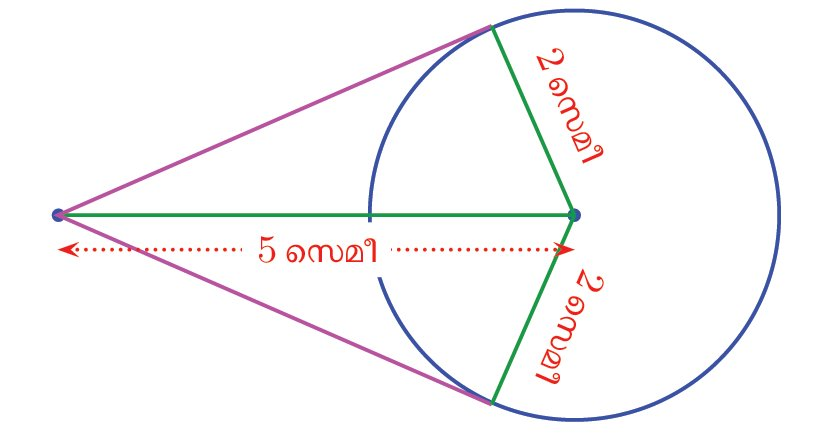<figcaption>Figure fig_ch08_p024_03 (Page 24)</figcaption></figure>
  <figure class="diagram-card" id="fig_ch08_p024_04">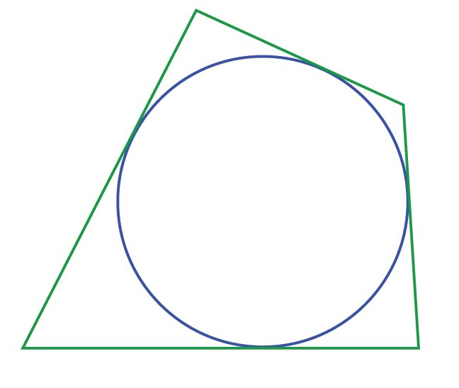<figcaption>Figure fig_ch08_p024_04 (Page 24)</figcaption></figure>
  <div class="page-content">
    <p>ഗണിതം ത
ഈ വൃത്തവും ആദ-്യവൃത്തവും മുറിച്ചു കടക്കുന്ന ബിന്ദുക്കൾ, പുറത്തെ
ബിന്ദുവുമായി യോജിപ്പിച്ചാൽ നമുക്കു വേണ്ട തൊടുവ-രക-ളായി.</p>
    <p>നമ്മുടെ കണക്കിൽ, വൃത്തത്തിന്റെ ആരം 2 സെന്റിമീറ്ററും, പുറത്തെ ബിന്ദു
വൃത്തകേന്ദ്രത്തിൽനിന്ന് 5 സെന്റിമീറ്റർ അകലെയുമാണ-ല്ലോ.</p>
    <p>അപ്പോൾ, പൈഥാഗ-റസ് സിദ്ധാന്തമുപ-യോഗിച്ച്, തൊടുവ-രക-ളുടെ നീളം
കണക്കാക്കാം.
5 − 2 = 21 സെ.മീ.
വൃത്തത്തിലെ രണ്ട് ബിന്ദുക്കളിലൂടെ തൊടുവ-രകൾ വരച്ചാൽ, തൊടുന്ന
ബിന്ദു മുതൽ കൂട്ടിമുട്ടുന്ന ബിന്ദുവരെയുള്ള തൊടുവ-രയുടെ നീളം
തുല-്യമാണെന്ന് നേരത്തെ കണ്ടതാണ്. അതിനി ഇങ്ങനെയും പറയാം.
2</p>
    <p>2</p>
    <p>ഒരു ബിന്ദുവിൽ നിന്നും വൃത്തത്തിലേക്ക് വരയ്ക്കുന്ന തൊടുവ-രകൾക്ക് ഒരേ നീളമാണ്.</p>
    <p>ഇതുപ-യോഗിച്ചൊരു കണക്കു നോക്കാം. ചിത്രത്തിൽ ഒരു വൃത്തത്തിലെ നാല് ബിന്ദുക്കളിലെ
തൊടുവ-രകൾ വശങ്ങളായി ഒരു ചതുർഭുജം
വരച്ചിരിക്കുന്നു.
വൃത്തകേന്ദ്രവും, ഈ ബിന്ദുക്കളും യോജിപ്പിച്ചാലോ?</p>
    <p>176</p>
  </div>
</section><section class="page-section" id="page-25">
  <div class="page-header"><span class="page-number">Page 25</span></div>
  <figure class="diagram-card" id="fig_ch08_p025_01"><figcaption>Figure fig_ch08_p025_01 (Page 25)</figcaption></figure>
  <figure class="diagram-card" id="fig_ch08_p025_02"><figcaption>Figure fig_ch08_p025_02 (Page 25)</figcaption></figure>
  <figure class="diagram-card" id="fig_ch08_p025_03"><figcaption>Figure fig_ch08_p025_03 (Page 25)</figcaption></figure>
  <figure class="diagram-card" id="fig_ch08_p025_04"><figcaption>Figure fig_ch08_p025_04 (Page 25)</figcaption></figure>
  <figure class="diagram-card" id="fig_ch08_p025_05"><figcaption>Figure fig_ch08_p025_05 (Page 25)</figcaption></figure>
  <div class="page-content">
    <p>തൊടുവ-രകൾ
മൂലക-ളിൽ നിന്നുള്ള തൊടുവ-രക-ളുടെ നീളം മ, യ, ര, റ എന്നെടുത്താൽ ചുവടെക്കാണിച്ചിരിക്കുന്നതു പോലെ ഈ നീളങ്ങൾ
അടയാള-പ്പെടുത്താം.</p>
    <p>റ
റ</p>
    <p>ര
ര</p>
    <p>മ
യ
മ</p>
    <p>യ</p>
    <p>അപ്പോൾ ചതുർഭുജ-ത്തിന്റെ താഴത്തെയും മുകളിലെയും വശ- ങ്ങ - ള ഉടെ തുക</p>
    <p>(മ + യ) + (ര + റ).</p>
    <p>ഇടതും വലതും വശങ്ങളുടെ തുകയോ?</p>
    <p>(മ + റ) + (യ +ര)</p>
    <p>രണ്ട് തുകയും മ + യ + ര + റ</p>
    <p>ജിയോജിബ്രയിൽ ഒരു വൃത്തം വരച്ച്
അതിൽ നാല് ബിന്ദുക്കൾ അടയാളപ്പെടുത്തുക. ഈ നാല് ബിന്ദുക്കളിലൂടെയും വൃത്തത്തിന് തൊടുവ-രകൾ
വരച്ച് അവ കൂട്ടിമുട്ടുന്ന ബിന്ദുക്കൾ
അടയാള-പ്പെടുത്തുക. ഈ ബിന്ദുക്കൾ
മൂലക-ളായി വരുന്ന ചതുർഭുജം വരയ്ക്കുക. ഇനി തൊടുവ-രകൾ മറച്ചു
വയ്ക്കാം. ചതുർഭുജത്തിന്റെ വശങ്ങളുടെ നീളം അടയാള-പ്പെടുത്തി അവ
തമ്മിലുള്ള ബന്ധം നിരീക്ഷിക്കുക.
വൃത്തത്തിലെ ബിന്ദുക്കളുടെ സ്ഥാനം
മാറ്റി നോക്കൂ.</p>
    <p>തന്നെ; അതായ-ത്,</p>
    <p>ഒരു വൃത്തത്തിലെ നാല് ബിന്ദുക്കളിലൂടെയുള്ള തൊടുവ-രകൾ
ചേർന്നുണ്ടാകുന്ന ചതുർഭുജ-ത്തിന്റെ എതിർവശ-ങ്ങളുടെ തുക തുല്യമാണ്.
വൃത്തത്തിലെ നാല് ബിന്ദുക്കൾ യോജിപ്പിച്ചു വരയ്ക്കുന്ന ചതുർഭുജ-ത്തിന്റെ
എതിർകോണുക-ളുടെ തുക തുല-്യമാണെന്ന് നേരത്തെ കണ്ടത് ഓർക്കുക.
ഒരു ചതുർഭുജ-ത്തിന്റെ എതിർവശ-ങ്ങളുടെ തുക തുല്യമാണെങ്കിൽ
ആ നാല് വശങ്ങളും തൊടുവ-രക-ളാകുന്ന ഒരു വൃത്തം വരയ്ക്കാൻ
പറ്റുമോ?
ഒരു ബിന്ദുവിൽ നിന്ന് വൃത്തത്തിലേക്കു വരയ്ക്കുന്ന വരക-ളിൽ, വൃത്തത്തെ
ഒരു ബിന്ദുവിൽ മാത്രം തൊടുന്ന വരകൾ തുല-്യമാണെന്ന് കണ്ടു. വൃത്തത്തെ
രണ്ട് ബിന്ദുക്കളിൽ മുറിച്ചുകടക്കുന്ന വരക-ളിലെല്ലാം, മുഴുവൻ വരയുടെയും
വൃത്തത്തിനു പുറത്തുള്ള ഭാഗത്തിന്റെയും ഗുണന-ഫലം തുല്യമാണെന്ന്</p>
    <p>വൃത്തങ്ങൾ എന്ന പാഠത്തിൽ കണ്ടുവ-ല്ലോ. ഈ ചിത്രവും അതിന്റെ സമവാക-്യവും ഓർമയില്ലേ?</p>
    <p>ജ</p>
    <p>ജഅ ണ്മ ജആ = ജഇ ണ്മ ജഉ</p>
    <p>ഇനി ഒരു ബിന്ദുവിൽ നിന്ന് വൃത്തത്തെ തൊടുന്ന ഒരു വരയും മുറിക്കുന്ന
ഒരു വരയും വരച്ചാലോ?</p>
    <p>177</p>
  </div>
</section>
    </main>

    <footer>
      <div class="nav-bar"><a href="chapter_07_coordinates.html">← അധ്യായം 7: സൂചകസംഖ്യകൾ</a><a href="index.html">☰ Index</a><a href="chapter_09_solids.html">അധ്യായം 9: ഘനരൂപങ്ങൾ →</a></div>
      <p style="text-align: center; font-size: 0.85rem; color: var(--text-muted); margin-top: 2rem;">
        Kerala SCERT Class 10 ഗണിതം (Malayalam Medium) - Extracted Study Text
      </p>
    </footer>
  </div>
</body>
</html>
